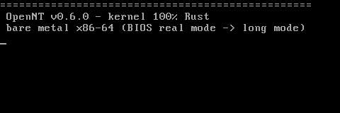
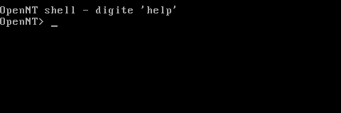
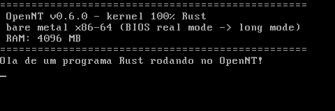
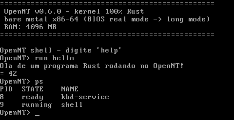
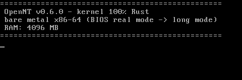
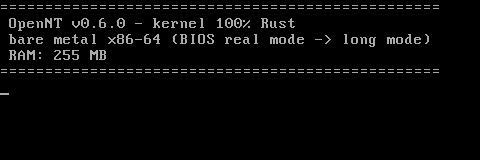
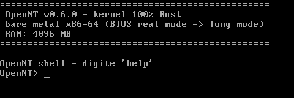

Testes
Cada teste inicia o OpenNT no QEMU, com os binários da Microsoft no volume, e espera frases combinadas (marcadores) na saída serial; um pânico, uma exceção de kernel ou um STOP reprova. São 2 suítes completas e 77 cenários.
Validar tudo
cargo xtask test-all- Roda as suítes completas de autoteste (com 4 CPUs e com 1) e cada teste abaixo, em paralelo, cada um na própria pasta
build/test-all/<id>. - Monta cada imagem uma vez por configuração de build, sem dois builds no mesmo
target/, e só sobe um QEMU quando a memória livre do host o cobre. - No fim, mostra a tabela com o resultado e, de cada falha, o trecho da serial que a explica; sai com erro se algum teste falhar.
- Roda no WHPX (a virtualização do processador) quando o QEMU e a máquina o têm, senão no TCG; um teste com
acelerador = "tcg"nocomponents.tomlroda sempre no TCG. - 2 testes marcados
espera_falha(falha conhecida) fica fora da rodada padrão e roda com--espera-falha, sem reprovar a rodada; 11 comcoberto_pela_suitesó rodam à parte com--only.--allroda todos.
Opções: --only=ID,..., --skip=ID,..., --jobs=N, --repeat=N (falhas intermitentes), --suite ou --no-suite, --espera-falha, --all, --accel=tcg|whpx, --keep, --cpu-friendly e --list.
Um teste só
cargo xtask test-all --only=ntfs
cargo xtask test-boot SMSS_CSRSS_OK 300000 --initial-process=smss --smp=1Capturas de tela
cargo xtask capturas
cargo xtask capturas --only=win32k-displayRoda cada teste como o test-all e, no fim dele (passando ou não), grava a tela do QEMU em docs/site/capturas/<id>.png pelo screendump do QMP, com a data e o resultado no PNG. Depois, cargo xtask status regenera as páginas. Hoje 42 de 77 testes têm captura.
Suítes completas
suite-smp4 e suite-smp1 rodam todas as suítes de autoteste dentro do kernel, com 4 e com 1 CPUs, e conferem, nesta ordem: PHASE3_SELFTEST_OK, PHASE4_SELFTEST_OK, PHASE5_SELFTEST_OK, XSTATE_KERNEL_OK, TIME_KEEPING_OK, PHASE6_SELFTEST_OK, MULTIPROCESS_OK, XSTATE_USER_OK, TIME_USER_OK, PIPES_OK, LPC_PORTS_OK, PHASE7_SELFTEST_OK, KBDTEST_OK, SELFTEST_OK.
Os 77 cenários
entradaEntrada no kernelO carregador de boot levou a máquina ao modo de 64 bits, entregou o controle ao kernel e a saída serial funciona.
Marcador:
HELLO_KERNEL_OK(emkernel/src/main.rs)cargo xtask test-boot HELLO_KERNEL_OK
Tela do QEMU no fim do teste entrada, 15/11/2026Serial no fim do teste
BEAPKGL6[OpenNT] kernel 64-bit vivo (BIOS real mode -> long mode) HELLO_KERNEL_OKbootBoot completoAs fases 0 e 1 do boot terminaram
Descrição completa
As fases 0 e 1 do boot terminaram: relógio, interrupções, memória, processadores, pool, processos e namespace prontos.
Marcador:
KERNEL_RS_OK(emkernel/src/ntos/init/main.rs)cargo xtask test-boot
Tela do QEMU no fim do teste boot, 15/11/2026Serial no fim do teste
... [zw] QuerySystemInformation classe 76 buf=20 [zw] entropia: rotinas registradas (1 provedor(es)) [boot] cng.sys carregado; \Device\CNG publicado [services] tabela nativa nao registrada: ntdll.dll ausente (NTFS e bundle) KERNEL_RS_OK [usermode] rin
nas suítesselftestAutoteste do kernelRoda dentro do kernel todas as suítes de autoteste
Descrição completa
Roda dentro do kernel todas as suítes de autoteste: arquivos em memória, programas de exemplo, memória, escalonador, timer, IPC e serviços; depois as suítes das fases 3 a 7 (objetos e executive, I/O e armazenamento, Registro e serviços, carregador de PE, modo usuário) e o teclado real. Dentro da fase 7, o MULTIPROCESS_OK marca o teste em que um programa de usuário cria outro processo pela chamada de sistema do Windows. O SELFTEST_OK final só aparece se todas passarem. As marcas são procuradas em ordem, cada uma depois da anterior: o comando parte do PHASE6_SELFTEST_OK, espera o MULTIPROCESS_OK (que sai dentro da fase 7) e o PHASE7_SELFTEST_OK, e só então o SELFTEST_OK, porque esse texto também está dentro dos marcadores de cada fase e, sozinho, já casaria com o da fase 3.
Marcador:
SELFTEST_OK(emkernel/src/ntos/test/self_test.rs)cargo xtask test-boot PHASE6_SELFTEST_OK 600000 --kernel-test-scope=all --build-dir=build/tests --expect=MULTIPROCESS_OK --expect=PHASE7_SELFTEST_OK --expect=SELFTEST_OK
Tela do QEMU no fim do teste selftest, 15/11/2026Serial no fim do teste
... PHASE6_SELFTEST_OK ... MULTIPROCESS_OK ... PHASE7_SELFTEST_OK ... [selftest] tecla REAL recebida: MakeCode 0x1e flags 0x1 (12 bytes) KBDTEST_OK SELFTEST_OK [kbd] lendo teclas do driver real (i8042prt+kbdclass) OpenNT shell - digite 'help' OpenNT> [shell] pronto
nas suítesfase3Autoteste de objetos e executiveDispatcher, APCs, timers e alertas; push locks e rundown; tabelas de handles, namespace e callbacks de objetos; processos e segurança.
Marcador:
PHASE3_SELFTEST_OK(emkernel/src/ntos/test/phase3.rs)cargo xtask test-boot PHASE3_SELFTEST_OK 60000 --kernel-test-scope=all --build-dir=build/tests
Tela do QEMU no fim do teste fase3, 15/11/2026Serial no fim do teste
... [csr] sessao 0: SharedSection e ApiPort prontos [scmr] ntsvcs registrado; gerenciador disponivel Ola de um programa Rust rodando no OpenNT! [selftest] TSC calibrado 3393624106 Hz, medido de novo 3393624734 Hz PHASE3_SELFTEST_OK [iom] pilha estourada: irp=0xffffc000c0030bf0 CL=1 SC=2 dev=0xffffc000c0030a90
nas suítesfase4Autoteste de I/O e armazenamentoNo hardware emulado do QEMU
Descrição completa
No hardware emulado do QEMU: configuração e barramento PCI, dispositivos da placa-mãe, disco ATA, leitura e escrita de NTFS, I/O Manager (IRPs, dispositivos e arquivos), energia e ETW.
Marcador:
PHASE4_SELFTEST_OK(emkernel/src/ntos/test/phase4.rs)cargo xtask test-boot PHASE4_SELFTEST_OK 240000 --kernel-test-scope=all --build-dir=build/tests
Tela do QEMU no fim do teste fase4, 15/11/2026Serial no fim do teste
... [atapio] readSectors lba=16 count=8 drive=1 [atapio] readSectors lba=16 count=8 drive=1 [atapio] readSectors lba=16 count=8 drive=1 [atapio] readSectors lba=16 count=8 drive=1 [dma] adaptador 0xffffc000c0031140 (master, max 0x10000, 17 registradores de mapa) PHASE4_SELFTEST_OK
nas suítesfase5Autoteste de Registro e serviçosChaves e valores, hives de arquivo no formato regf (as hives de máquina carregadas do volume, o CurrentControlSet como link para o ControlSet001 e os links do Registro, a HARDWARE volátil e a lista de hives, cópia por NtSaveKey e carga por NtLoadKey, descarga com log e recuperação, o escritor preguiçoso e a descarga do desligamento, restauração com REG_WHOLE_HIVE_VOLATILE e REG_REFRESH_HIVE, hives de aplicativo e o handle da raiz na carga, privilégios, e o heap de uma hive carregada
Descrição completa
Chaves e valores, hives de arquivo no formato regf (as hives de máquina carregadas do volume, o CurrentControlSet como link para o ControlSet001 e os links do Registro, a HARDWARE volátil e a lista de hives, cópia por NtSaveKey e carga por NtLoadKey, descarga com log e recuperação, o escritor preguiçoso e a descarga do desligamento, restauração com REG_WHOLE_HIVE_VOLATILE e REG_REFRESH_HIVE, hives de aplicativo e o handle da raiz na carga, privilégios, e o heap de uma hive carregada: o conteúdo das chaves fica nas células e só as chaves em uso têm nó, a carga de uma hive de 4041 chaves cria só o nó da raiz, a lista de fechamento adiado guarda no máximo 2048 nós, a enumeração dá as subchaves em ordem de nome, e as chaves excluídas e a descarga devolvem os nós e o heap), callbacks do Registro (com o CmRegisterCallback legado, contextos de objeto, identidade da chave e as notificações dos serviços de hive), banco de serviços, WNF, licenciamento e capacidades.
Marcador:
PHASE5_SELFTEST_OK(emkernel/src/ntos/test/phase5.rs)cargo xtask test-boot PHASE5_SELFTEST_OK 240000 --kernel-test-scope=all --build-dir=build/tests
Tela do QEMU no fim do teste fase5, 15/11/2026Serial no fim do teste
... [atapio] readSectors lba=16 count=8 drive=1 [dma] adaptador 0xffffc000c0031140 (master, max 0x10000, 17 registradores de mapa) PHASE4_SELFTEST_OK [atapio] readSectors lba=16 count=8 drive=1 [cm] desligamento: hives descarregadas (0x0) PHASE5_SELFTEST_OK
nas suítesfase6Autoteste do carregador de PE e do ntoskrnlFormato PE, carga de imagens do kernel, os exports do ntoskrnl grupo por grupo (Ke, Mm, Ex, Io, Ob, Rtl, Zw...), ciclo de vida de drivers e tratamento de exceções.
Marcador:
PHASE6_SELFTEST_OK(emkernel/src/ntos/test/phase6.rs)cargo xtask test-boot PHASE6_SELFTEST_OK 240000 --kernel-test-scope=all --build-dir=build/tests
Tela do QEMU no fim do teste fase6, 15/11/2026Serial no fim do teste
... *** Assertion failed: Count == 0 *** Source File: quickwins.c, line 42 [driver:101] *** Assertion failed: mensagem Count == 1 *** Source File: quickwins.c, line 43 PHASE6_SELFTEST_OK
nas suítesfase7Autoteste do modo usuárioSeções e memória virtual de usuário, arquivos, eventos e threads, chamadas de sistema, entrada no anel 3, ALPC, controle de serviços (sc) e um processo em modo usuário
Descrição completa
Seções e memória virtual de usuário, arquivos, eventos e threads, chamadas de sistema, entrada no anel 3, ALPC, controle de serviços (sc) e um processo em modo usuário: um executável PE mínimo, gerado pelo próprio teste, que passa pelo LdrInitializeThunk da ntdll de bring-up e sai com o código esperado.
Marcador:
PHASE7_SELFTEST_OK(emkernel/src/ntos/test/phase7.rs)cargo xtask test-boot PHASE7_SELFTEST_OK 240000 --kernel-test-scope=all --build-dir=build/tests
Tela do QEMU no fim do teste fase7, 15/11/2026Serial no fim do teste
... [mm] process exit: PFN used=10262/352256, kernel heap=22236048/67108832 [jobs] segundo gerente: Ok(72) [usermode] arquivo aberto: \??\D:\FILHOJOB.EXE (5120 bytes) JOBS_OK PHASE7_SELFTEST_OK [pe] base=0xfffff80100250000 (fisico 0x8811000) imagem=81920 bytes, 10 secoes
nas suítestecladoTeclado realMonta pelo PnP as pilhas do i8042prt.sys com kbdclass.sys e mouclass.sys, injeta um scancode pelo controlador 8042 e lê a tecla em \Device\KeyboardClass0 (IRQ1, ISR do driver, DPC e callback do kbdclass).
Marcador:
KBDTEST_OK(emkernel/src/ntos/test/self_test.rs)cargo xtask test-boot KBDTEST_OK 600000 --kernel-test-scope=all --build-dir=build/tests
Tela do QEMU no fim do teste teclado, 15/11/2026Serial no fim do teste
... KBDTEST_OK SELFTEST_OK [kbd] lendo teclas do driver real (i8042prt+kbdclass) OpenNT shell - digite 'help' OpenNT> [shell] pronto [kernel] preempcao por timer ativa (quantum 10ms, LAPIC timer vetor 0x40)driversDrivers do Windows no boot comumNo boot sem autotestes, confere pela serial, nesta ordem
Descrição completa
No boot sem autotestes, confere pela serial, nesta ordem: a hal.dll carregada; os cinco serviços de boot e de sistema (atapi, disk e mountmgr, e os file systems de pipes e mailslots Npfs e Msfs) com a imagem carregada e o DriverEntry bem-sucedido; o cng.sys carregado com \Device\CNG publicado; na árvore de dispositivos com a raiz ACPI, o filtro de classe mouclass anexado ao mouse PS/2 que o acpi.sys relata (ACPI\PNP0F13); e o serviço de teclado lendo do i8042prt.sys com o kbdclass.sys.
Marcador:
[boot] hal.dll carregado(emkernel/src/ntos/init/phase1.rs)cargo xtask test-boot "[boot] hal.dll carregado" 240000 --smp=1 --build-dir=build/drivers "--expect=[boot] servicos carregados: 5" "--expect=[boot] cng.sys carregado;" "--expect=[pnp] AddDevice de mouclass -> 0x0" "--expect=[kbd] lendo teclas do driver real"
Tela do QEMU no fim do teste drivers, 15/11/2026Serial no fim do teste
... [boot] hal.dll carregado (0 exports, 91 encaminhamentos) ... [boot] servicos carregados: 5 ... [boot] cng.sys carregado; \Device\CNG publicado ... [pnp] AddDevice do filtro mouclass -> 0x0 ... [pnp] START_DEVICE \Device\Unnamed2 -> 0x0 [pnp] \Device\Unnamed2: 0 filho(s) no bus OpenNT shell - digite 'help' OpenNT> [shell] pronto [kernel] preempcao por timer ativa (quantum 10ms, LAPIC timer vetor 0x40) [kbd] lendo teclas do driver real (i8042prt+kbdclass)
nas suítespipesPipes nomeados e mailslots entre processosDentro da fase 7
Descrição completa
Dentro da fase 7: um servidor e um cliente de modo usuário, programas gerados pelo próprio teste que fazem as chamadas de sistema do Windows, conversam pelos npfs.sys e msfs.sys reais, iniciados no boot. O servidor cria um pipe de mensagens, um de bytes e um mailslot e bloqueia no FSCTL_PIPE_LISTEN; o cliente espera o pipe (FSCTL_PIPE_WAIT), conecta e faz um FSCTL_PIPE_TRANSCEIVE; o servidor confere a conexão (FilePipeLocalInformation), espera a mensagem pelo FSCTL_PIPE_PEEK, lê, consulta o PID do cliente (o atributo de conexão ClientProcessId, pelo FSCTL_PIPE_GET_CONNECTION_ATTRIBUTE, como o GetNamedPipeClientProcessId) e responde; no pipe de bytes o cliente escreve e lê de forma assíncrona, esperando o evento que a conclusão vinda do outro processo sinaliza; o cliente escreve no mailslot e o servidor lê; o servidor desconecta e os dois saem com os próprios códigos. As esperas entre os processos bloqueiam de verdade. O PIPES_OK sai só se tudo isso passar.
Marcador:
PIPES_OK(emkernel/src/ntos/test/multiprocess/pipes.rs)cargo xtask test-boot PHASE6_SELFTEST_OK 900000 --kernel-test-scope=all --build-dir=build/pipes --smp=1 --expect=PIPES_OK --expect=PHASE7_SELFTEST_OK
Tela do QEMU no fim do teste pipes, 15/11/2026Serial no fim do teste
... PHASE6_SELFTEST_OK ... PIPES_OK ... PHASE7_SELFTEST_OK ... [pe] relocada p/ 0xfffff80100270000 (13 fixups) [pe] security cookie semeado em 0xfffff80100277010 [pe] imports de ntoskrnl.exe [pe] entry point = 0xfffff8010027d010 [kernel-library] DllInitialize wpprecorder.sys [rtl] QueryRegistry path="\Registry\Machine\System\CurrentControlSet\Control\WppRecorder
nas suíteslpcPortas LPC entre processosDentro da fase 7
Descrição completa
Dentro da fase 7: um servidor e um cliente de modo usuário, programas gerados pelo próprio teste, conversam pelas portas LPC do Windows, que no kernel são portas ALPC no modo LPC. O servidor cria a porta (NtCreatePort; o MaxMessageLength acima do limite e o nome repetido são recusados) e espera a conexão (NtListenPort). O cliente conecta (NtConnectPort) com uma seção de 64 KB como vista de transferência e 8 bytes de informação de conexão; o servidor confere a mensagem de conexão (o PID do cliente e o tamanho da vista), aceita com o seu PortContext e a resposta (NtAcceptConnectPort, NtCompleteConnectPort) e recebe a vista do cliente mapeada no próprio espaço. O cliente escreve um marcador na vista e faz dois pedidos síncronos (NtRequestWaitReplyPort, o segundo reaproveitando o buffer da resposta, como o CsrClientCallServer) e um datagrama (NtRequestPort); o servidor recebe cada um (NtReplyWaitReceivePort, com o PortContext e o CLIENT_ID), lê o marcador pela vista dele, impersona o cliente (NtImpersonateClientOfPort), consulta a porta (NtQueryInformationPort), responde (NtReplyPort; a segunda resposta ao mesmo pedido é recusada) e recebe o aviso de fechamento quando o cliente fecha a porta. Os dois saem com os próprios códigos e o nome da porta sai do namespace. O LPC_PORTS_OK sai só se tudo isso passar.
Marcador:
LPC_PORTS_OK(emkernel/src/ntos/test/multiprocess/lpc_ports.rs)cargo xtask test-boot PHASE6_SELFTEST_OK 900000 --kernel-test-scope=all --build-dir=build/lpc --smp=1 --expect=LPC_PORTS_OK --expect=PHASE7_SELFTEST_OKTela do QEMU no fim do teste lpc, 16/11/2026Serial no fim do teste
... PHASE6_SELFTEST_OK ... LPC_PORTS_OK ... PHASE7_SELFTEST_OK ... [selftest] tecla REAL recebida: MakeCode 0x1e flags 0x1 (12 bytes) KBDTEST_OK SELFTEST_OK [kbd] lendo teclas do driver real (i8042prt+kbdclass) OpenNT shell - digite 'help' OpenNT> [shell] prontoshellTeste do shellEspera o shell, digita comandos pelo monitor do QEMU (run hello, ps) e confere a saída
Descrição completa
Espera o shell, digita comandos pelo monitor do QEMU (run hello, ps) e confere a saída: teclado, IPC, shell e console. Com os binários do Windows no build, as teclas chegam pelo i8042prt.sys e pelo kbdclass.sys reais.
Marcador:
[shell] pronto(emkernel/src/shell/mod.rs)cargo xtask test-boot KERNEL_RS_OK 120000 --smp=1 "--keys=run hello\nps\n" "--expect== 42" "--expect=PID STATE"
Tela do QEMU no fim do teste shell, 15/11/2026Serial no fim do teste
... KERNEL_RS_OK ... = 42 OpenNT> ps [shell] > ps PID STATE NAME 8 ready kbd-service 9 running shell OpenNT>
na execução de win32ksmss-csrsssmss.exe e csrss.exe reaisCom --initial-process=smss, o primeiro processo de usuário é o smss.exe real, protegido e crítico como no Windows, com a ntdll real.
Descrição completa
Com --initial-process=smss, o primeiro processo de usuário é o smss.exe real, protegido e crítico como no Windows, com a ntdll real. Ele lê a configuração do Session Manager no Registro, monta o \KnownDlls, os DosDevices, \Sessions e os prefixos protegidos dos pipes e mailslots, abre o \SmApiPort e cria pela chamada de sistema do Windows o smss da sessão, numa sessão nova, que herda os handles dele e se conecta ao \SmApiPort. O marcador sai quando uma thread do csrss.exe criado por esse smss pede pela primeira vez um serviço do win32k.sys (que o smss da sessão já carregou), com o smss inicial e o csrss vivos. Antes do csrss, o volume de boot do kernel chega ao mountmgr.sys real (IOCTL_MOUNTMGR_VOLUME_ARRIVAL_NOTIFICATION, marcado DO_SYSTEM_BOOT_PARTITION) e o IOCTL_MOUNTMGR_BOOT_DL_ASSIGNMENT dá a ele o C:, que o IoVolumeDeviceToDosName devolve.
Marcador:
SMSS_CSRSS_OK(emkernel/src/ntos/init/initial_process.rs)cargo xtask test-boot MOUNTMGR_BOOT_VOLUME_OK 300000 --initial-process=smss --build-dir=build/smss --smp=1 --expect=SMSS_CSRSS_OK
Tela do QEMU no fim do teste smss-csrss, 15/11/2026Serial no fim do teste
... [usermode] syscall NtTraceControl sem implementacao de modo usuario [usermode] syscall NtTraceControl sem implementacao de modo usuario [usermode] syscall NtTraceControl sem implementacao de modo usuario [init] csrss.exe (pid 48) pediu o servico 0x12e3 da tabela do win32k (carregado) [init] csrss.exe (pid 48) criado pelo smss.exe (pid 40); smss inicial (pid 24) e csrss vivos ao pedir o win32k SMSS_CSRSS_OK
na execução de win32ketw-userProvedores ETW da ntdll realNo boot do smss real, o EventRegister da ntdll registra os provedores ETW do processo pelo NtTraceControl como no Windows
Descrição completa
No boot do smss real, o EventRegister da ntdll registra os provedores ETW do processo pelo NtTraceControl como no Windows: o EtwAddNotificationEvent guarda o evento da fila de notificações do processo e o EtwRegisterGuids cria o objeto EtwRegistration de cada provedor, com o handle na tabela do processo e o estado de habilitação das sessões. O marcador sai no primeiro registro de modo usuário, com o GUID do provedor e o handle.
Marcador:
ETW_USER_REGISTRATION_OK(emkernel/src/ntos/etw/user_registration.rs)cargo xtask test-boot ETW_USER_REGISTRATION_OK 300000 --initial-process=smss --build-dir=build/etw-user --smp=1
Tela do QEMU no fim do teste etw-user, 16/11/2026Serial no fim do teste
... [usermode] primeiro: NtTraceControl [etw] ETW_USER_REGISTRATION_OK provedor {3595AB5C-042A-4C8E-B942-2D059BFEB1B1} handle=0x32c [usermode] primeiro: NtQueryPerformanceCounter [usermode] primeiro: NtOpenFile [usermode] arquivo aberto: \??\C:\Windows (0 bytes) [usermode] primeiro: NtQueryVolumeInformationFilewin32kwin32k.sys real carregado pelo smss.exeNo boot do smss real, o dxgkrnl.sys sobe com os drivers de sistema e o smss da sessão carrega o Kmode do Session Manager pela chamada de sistema do Windows (NtSetSystemInformation, classe 38)
Descrição completa
No boot do smss real, o dxgkrnl.sys sobe com os drivers de sistema e o smss da sessão carrega o Kmode do Session Manager pela chamada de sistema do Windows (NtSetSystemInformation, classe 38): o win32k.sys real entra no espaço de sessão, carrega o win32kbase.sys e o win32kfull.sys como imagens de sessão e o DriverEntry dele volta com sucesso, com a tabela de serviços gráfica publicada e os callouts Win32 estabelecidos. Depois o csrss.exe chega ao primeiro serviço do win32k, que o win32k real atende. Em seguida o cfgmgr32.dll abre o \Device\DeviceApi\CMApi, o winsrvext inicializa e chama o NtUserInitialize; numa máquina sem adaptador de vídeo, a criação da sessão no dxgkrnl espera o primeiro adaptador (DpiSessionCreateCallback), como no Windows.
Marcador:
WIN32K_LOADED(emkernel/src/ntos/init/initial_process.rs)cargo xtask test-boot WIN32K_LOADED 420000 --initial-process=smss --build-dir=build/win32k --smp=1 --expect=SMSS_CSRSS_OK "--expect=thread GUI pelo PsConvertToGuiThread -> 0x0"
Tela do QEMU no fim do teste win32k, 15/11/2026Serial no fim do teste
... WIN32K_LOADED ... [usermode] syscall NtTraceControl sem implementacao de modo usuario [usermode] syscall NtTraceControl sem implementacao de modo usuario [init] csrss.exe (pid 48) pediu o servico 0x12e3 da tabela do win32k (carregado) [init] csrss.exe (pid 48) criado pelo smss.exe (pid 40); smss inicial (pid 24) e csrss vivos ao pedir o win32k SMSS_CSRSS_OK [init] csrss.exe (pid 48): thread GUI pelo PsConvertToGuiThread -> 0x0
na execução de logonuiwin32k-displayAdaptador de vídeo iniciado e NtUserInitialize do csrssCom o smss real e --display=basic, o boot deixa o vídeo de boot do carregador (o modo VBE 1024x768x32 com framebuffer linear, pelo BIOS de vídeo emulado) e o BasicDisplay.sys sobe pelo PnP sobre o dxgkrnl.sys.
Descrição completa
Com o smss real e --display=basic, o boot deixa o vídeo de boot do carregador (o modo VBE 1024x768x32 com framebuffer linear, pelo BIOS de vídeo emulado) e o BasicDisplay.sys sobe pelo PnP sobre o dxgkrnl.sys. Quando o csrss.exe real chama o NtUserInitialize, o win32k.sys anuncia a sessão (watchdog!SMgrNotifySessionChange -> DxgkNotifySessionStateChange -> DpiSessionCreateCallback) e o dxgkrnl inicia o adaptador: o DxgkDdiStartDevice do BasicDisplay usa o framebuffer do vídeo de boot (SystemBootGraphicsInformation) e o serviço de BDD do dxgkrnl (o DriverName \Driver\BasicDisplay), e o DpiFdoStartAdapter cria o \Device\Video0 e habilita a interface de chegada de dispositivo de vídeo: ADAPTER_STARTED. Depois o InitVideo do win32k enumera o \Device\Video0 e, como a sessão 0 é a de serviços, monta a configuração de exibição sobre o dispositivo desconectado do win32k (\Device\Disc, pela chave Services\TSDDD\Device0 da instalação); o InitUserScreen termina e o NtUserInitialize do csrss volta com sucesso: USER_INITIALIZED. Depois disso o csrss para no NtCreatePort da \Windows\SbApiPort (as portas LPC de servidor em modo usuário ainda não existem), fora da janela do teste.
Marcador:
USER_INITIALIZED(emkernel/src/ntos/init/initial_process.rs)cargo xtask test-boot BASICDISPLAY_OK 600000 --initial-process=smss --display=basic --build-dir=build/win32k-display --smp=1 --expect=SMSS_CSRSS_OK --expect=ADAPTER_STARTED --expect=USER_INITIALIZEDTela do QEMU no fim do teste win32k-display, 15/11/2026Serial no fim do teste
... BASICDISPLAY_OK ... SMSS_CSRSS_OK ... [rtl] QueryRegistry path="\Registry\Machine\System\CurrentControlSet\Control\GraphicsDrivers" table=0xffffa007002bf480 [rtl] "MiracastUseIhvDriver" flags=0x120 -> default 0x0 [rtl] "MiracastForceDisable" flags=0x120 -> default 0x0 [display] PCI\VEN_1234&DEV_1111&SUBSYS_11001AF4&REV_02\1&ebb567f&0&10: adaptador iniciado pelo dxgkrnl (DxgkDdiStartDevice do BasicDisplay); interface \??\PCI#V... ADAPTER_STARTED [rtl] QueryRegistry path="\Registry\Machine\System\CurrentControlSet\Control\GraphicsDrivers\BasicDisplay" table=0xffffa007002bf410
na execução de logonuiwinsta0WinSta0 e Desktops do wininit.exe realCom o smss real e --display=basic, o csrss.exe da sessão 0 sobe a \Windows\SbApiPort e o smss cria o wininit.exe, que registra o processo de logon (o RegisterLogonProcess do win32k pelo RPC de kernel do msrpc.sys) e cria a WinSta0 pelo NtUserCreateWindowStation.
Descrição completa
Com o smss real e --display=basic, o csrss.exe da sessão 0 sobe a \Windows\SbApiPort e o smss cria o wininit.exe, que registra o processo de logon (o RegisterLogonProcess do win32k pelo RPC de kernel do msrpc.sys) e cria a WinSta0 pelo NtUserCreateWindowStation. O NtUserCreateDesktopEx da Desktop Winlogon manda mensagens à thread da Desktop do csrss, que as recebe pela porta de conclusão da fila de mensagens dela (o pacote de espera do evento da fila alimenta a IOCP que o win32k espera com KeWaitForMultipleObjects; o corpo do IoCompletion é uma KQUEUE); o xxxCreateDisconnectDesktop cria a Desktop Disconnect e a abre no csrss em KernelMode com os direitos fora do tipo descartados, como o ObpCreateHandle. O wininit cria a Desktop Default (WINSTA0_OK), chama o SwitchDesktop, sobe o servidor RPC de pipe nomeado \PIPE\InitShutdown (a porta de conclusão e os modos de notificação do arquivo do npfs.sys) e cria o services.exe real pelo CreateProcessW, com o BaseSrvCreateProcess do csrss atendido (ProcessConsoleHostProcess e ProcessSequenceNumber).
Marcador:
WINSTA0_OK(emkernel/src/ntos/init/initial_process.rs)cargo xtask test-boot USER_INITIALIZED 900000 --initial-process=smss --display=basic --build-dir=build/winsta0 --smp=1 --expect=WINSTA0_OK "--expect=criou services.exe"
Tela do QEMU no fim do teste winsta0, 16/11/2026Serial no fim do teste
... USER_INITIALIZED ... WINSTA0_OK ... [pe] base=0x140000000 (fisico 0xe74d000) imagem=720896 bytes, 7 secoes [pe] VA 0x140000000 mapeada (176 paginas) [pe] entry point = 0x140033b80 [usermode] services.exe: LdrInitializeThunk em 0x180075c10 (exe entry 0x140033b80, teb 0x7ffffffb5000) [ps] NtCreateUserProcess: services.exe pid=0xb8 tid=0xbc handles 0x24a4/0x24a8 (suspensa) [init] wininit.exe (pid 128) criou services.exe (pid 184) por NtCreateUserProcess
na execução de logonuiwinlogonDesktops do winlogon.exe real da sessão 1Com o smss real e --display=basic, o smss da sessão 1 cria o csrss e o winlogon.exe.
Descrição completa
Com o smss real e --display=basic, o smss da sessão 1 cria o csrss e o winlogon.exe. O RegisterLogonProcess do winlogon passa pelo RPC de kernel do msrpc.sys: o pacote vai para a porta de conclusão do msrpc e acorda a thread de trabalho dele, parada no ZwRemoveIoCompletionEx, que sai da espera pronta para rodar. O winlogon abre então as Desktops Winlogon, Disconnect e Default da WinSta0 da sessão 1 (WINLOGON_DESKTOPS_OK) e chama o SwitchDesktop.
Marcador:
WINLOGON_DESKTOPS_OK(emkernel/src/ntos/init/initial_process.rs)cargo xtask test-boot USER_INITIALIZED 900000 --initial-process=smss --display=basic --build-dir=build/winlogon --smp=1 --expect=WINSTA0_OK --expect=WINLOGON_DESKTOPS_OKTela do QEMU no fim do teste winlogon, 16/11/2026Serial no fim do teste
... USER_INITIALIZED ... WINSTA0_OK ... [init] winlogon.exe (pid 228): WinSta0 com as Desktops Winlogon e Default WINLOGON_DESKTOPS_OK [thread] created tid=256 start=0x14002fea0 flags=0x0 teb=0x1ad0000 [usermode] NtContinue -> rip 0x18004cc70 rsp 0x1acfff8 [usermode] NtQueryInformationProcess classe 52 [usermode] NtQueryInformationProcess FALHOU com 0xc0000003 (rip 0x18009d8c4)
na execução de logonuiprimeiro-pixelPrimeiro pixel do win32k.sys na telaO boot do teste winlogon com o xtask lendo a tela do QEMU a cada 2 s (--watch-screen).
Descrição completa
O boot do teste winlogon com o xtask lendo a tela do QEMU a cada 2 s (--watch-screen). O vídeo de boot (o modo VBE 1024x768 do BasicDisplay.sys) é todo preto. O marcador FIRST_PIXEL_OK sai quando uma tela gráfica de pelo menos 800x600 mostra 64 pixels ou mais fora do preto, sem ser a tela de bugcheck, e a tela vai para build/primeiro-pixel/primeira-tela.png. O PnP instala o BasicRender.sys em ROOT\BASICRENDER (o adaptador de renderização WARP do dxgkrnl, com o dxgmms2.sys e o \Device\PhysicalMemory) e o monitor.sys no monitor que o BasicDisplay relata. Dentro do NtUserInitialize da sessão 1, o InitVideo do win32kbase abre o \Device\Video0, marca o dispositivo como WDDM e carrega o cdd.dll pelo ZwSetSystemInformation(26); o cdd acha o adaptador de renderização no dxgkrnl. O win32k põe o ponteiro do mouse no centro da tela e o BasicDisplay.sys o desenha direto no framebuffer: 73 pixels brancos. A Desktop do Winlogon é preta.
Marcador:
FIRST_PIXEL_OKo marcador não aparece nas fontescargo xtask test-boot FIRST_PIXEL_OK 600000 --initial-process=smss --display=basic --build-dir=build/primeiro-pixel --smp=1 --watch-screenSem captura ainda:
cargo xtask capturas --only primeiro-pixel
na execução de logonuitela-de-logonTela de logon do LogonUI.exe pelo dwm.exeO boot do teste primeiro-pixel até a tela de logon.
Descrição completa
O boot do teste primeiro-pixel até a tela de logon. O xtask lê a tela do QEMU a cada 2 s (--watch-screen); depois do FIRST_PIXEL_OK e do LOGONUI_STARTED na serial, o marcador LOGON_SCREEN_OK sai quando duas leituras seguidas mostram a mesma tela de logon: um quarto ou mais da tela fora do preto, a maior parte dos pixels vizinhos parecidos (uma imagem, não bytes quaisquer lidos como cor), 8 cores ou mais com 1/1536 da tela cada (512 pixels) e desenho em 3/5 das linhas e 3/5 das colunas. A tela de bloqueio de uma instalação nova (o Web\Screen\img100.jpg cobrindo a tela, com o relógio e a data) passa, também sem o texto; o ponteiro do mouse, uma cor lisa com texto (o LogonUI sem a imagem), memória lida como cor e um quadro pela metade não passam. O plano de energia do convidado tem 'Desligar a tela: Nunca' (VIDEOIDLE e VIDEOCONLOCK em zero no esquema ativo, o que o powercfg grava): a tela de logon não apaga durante o teste, em qualquer máquina. A tela vai para build/tela-de-logon/tela-de-logon.png e, no cargo xtask capturas, para a captura do site. Com o --capture-every=30, as telas que mudaram durante o teste ficam em build/tela-de-logon/tela-NNNN.png e a do fim em tela-final.png; no test-all, a pasta de uma falha fica com elas. Ainda falha: o winlogon cria o dwm.exe e o LogonUI.exe (testes dwm e logonui), mas os dois terminam antes de a interface XAML do LogonUI ser composta pelo dwm sobre o adaptador WARP do BasicRender.
Marcador:
LOGON_SCREEN_OKo marcador não aparece nas fontescargo xtask test-boot LOGON_SCREEN_OK 900000 --initial-process=smss --display=basic --build-dir=build/tela-de-logon --smp=1 --watch-screen --capture-every=30Sem captura ainda:
cargo xtask capturas --only tela-de-logonteclado-e-mouseTeclado e mouse na tela de bloqueio do LogonUI.exeO boot do teste logonui com a entrada pelo monitor do QEMU, como uma pessoa na frente da máquina
Descrição completa
O boot do teste logonui com a entrada pelo monitor do QEMU, como uma pessoa na frente da máquina: o teclado e o mouse PS/2 do i8042 chegam pelo i8042prt.sys, pelo kbdclass.sys e pelo mouclass.sys reais ao RIT do win32k da sessão 1, que abre os dispositivos de classe pelas interfaces de dispositivo que eles registram e os lê com o READ assíncrono. O winlogon mostra a tela de bloqueio pelo LogonUI e espera, na chamada LRPC WluiWaitForLockScreenDismiss (f3f09ffd, opnum 3), que ela seja dispensada. Com a tela de bloqueio desenhada e parada, o mouse anda (150, 100) e o win32k move o ponteiro, que o BasicDisplay.sys desenha por cima da tela (CURSOR_MOVED_OK, quando a seta sai de um lugar e aparece no outro, no sentido do movimento). Depois, com a tela de bloqueio parada em duas leituras seguidas (o relógio e a data embaixo à esquerda), o xtask aperta a barra de espaço: a leitura do kbdclass conclui para o RIT (KEYBOARD_INPUT_OK, no csrss da sessão 1), a tecla vai à janela do LogonUI, que tem o foco, a tela de bloqueio sobe e mostra a tela de credenciais, sem o relógio (LOGON_DISMISS_OK, quando a metade ou mais da tela mudou, o relógio saiu e a tela nova parou), e o LogonUI responde ao winlogon (a resposta do opnum 3 no --trace-rpc).
Marcador:
LOGON_DISMISS_OKo marcador não aparece nas fontescargo xtask test-boot LOGONUI_STARTED 900000 --initial-process=smss --display=basic --build-dir=build/teclado-e-mouse --smp=1 --trace-rpc --mouse=LOGONUI_STARTED:150,100 --expect=CURSOR_MOVED_OK "--dismiss=CURSOR_MOVED_OK:{spc}" --expect=KEYBOARD_INPUT_OK "--expect=lrpc resposta (f3f09ffd-fbcf-4291-944d-70ad6e0e73bb v1.0 opnum 3)" --expect=LOGON_DISMISS_OKSem captura ainda:
cargo xtask capturas --only teclado-e-mouse
na execução de logonuiservicesservices.exe e lsass.exe reais na sessão 0Com o smss real e --display=basic, o wininit.exe cria o services.exe pelo CreateProcessW
Descrição completa
Com o smss real e --display=basic, o wininit.exe cria o services.exe pelo CreateProcessW: o BaseSrvCreateProcess do csrss impersona o wininit (NtImpersonateThread, o CsrImpersonateClient) e o sxssrv.dll gera o contexto de ativação padrão do sistema pelos manifestos de WinSxS desta instalação. O pool de threads do wininit espera o fim do services.exe por um pacote de espera sobre o processo e o wininit cria o lsass.exe. O services.exe passa do ProcessMitigationPolicy, do NtDuplicateToken e do NtPrivilegeCheck, monta o banco de serviços e espera o LSA_RPC_SERVER_ACTIVE. O lsass.exe pede a base de prioridade 9, abre o \Security\LSA_AUTHENTICATION_INITIALIZED que o kernel cria e conecta ao Reference Monitor pela \SeRmCommandPort; o kernel aceita e conecta de volta à \SeLsaCommandPort do lsass (LSASS_STARTED). Depois o lsass carrega o lsasrv.dll e as extensões e sobe as portas RPC do LSA (teste lsa-politica).
Marcador:
LSASS_STARTED(emkernel/src/ntos/init/initial_process.rs)cargo xtask test-boot USER_INITIALIZED 900000 --initial-process=smss --display=basic --build-dir=build/services --smp=1 --expect=WINSTA0_OK --expect=LSASS_STARTEDSem captura ainda:
cargo xtask capturas --only services
na execução de logonuilsa-politicaBanco de política e inicialização do LSA no lsass.exe realO boot do teste services até o fim da inicialização do LSA.
Descrição completa
O boot do teste services até o fim da inicialização do LSA. As hives SAM e SECURITY saem como as de um sistema novo, e o LsapDbInitializeServer instala o banco de política (o LsapDbInstallPolicyObject), com a chave de sistema gravada nas classes de Control\Lsa\{JD,Skew1,GBG,Data} (o Class do NtCreateKey) e o RXACT criado pelo RtlInitializeRXact. O LsapAdtInitialize instala as SACLs globais (comando 5 do Reference Monitor) e registra o provedor de eventos de segurança (NtTraceControl 24, eventos pelo NtTraceEvent 0x500); o LsapInitializeCAPs abre as políticas de acesso central da instalação; o LsapLogonSessionInitialize solta a sessão do token guardado (TokenSessionReference); o CredpInitialize trava a memória protegida (NtLockVirtualMemory); o LoadPackages carrega o negoexts, o kerberos, o msv1_0 e os outros pacotes. O LsapRPCInit publica o \RPC Control\LSARPC_ENDPOINT (LSA_POLICY_READY). Depois o LsapStartLsa chama o SamIInitialize do samsrv.dll, que cria o banco de contas do primeiro boot (o CreatePolicyDatabaseOnFirstBoot do Control\Lsa, que o xtask grava) e sobe a porta samss lpc, e o RpcServerRegisterAuthInfo acha os provedores de autenticação do RPC (Microsoft\Rpc\SecurityService). O lsass registra a extensão de consulta e o services.exe segue (teste services-scm).
Marcador:
LSA_POLICY_READY(emkernel/src/ntos/init/initial_process.rs)cargo xtask test-boot USER_INITIALIZED 900000 --initial-process=smss --display=basic --build-dir=build/lsa-politica --smp=1 --expect=LSASS_STARTED --expect=LSA_POLICY_READYSem captura ainda:
cargo xtask capturas --only lsa-politica
na execução de logonuiservices-scmGerenciador de serviços do services.exe realO boot do teste lsa-politica até o ScEnableRpcInterface do services.exe.
Descrição completa
O boot do teste lsa-politica até o ScEnableRpcInterface do services.exe. O ScGetAccountDomainInfo consulta o lsass pelo \RPC Control\lsapolicylookup e o SvcctrlMain publica o \RPC Control\ntsvcs e o \pipe\ntsvcs (SERVICES_STARTED); a imitação do gerenciador de serviços do kernel fica desligada no boot com o smss. Em seguida o servidor do SCE do scesrv.dll sobe o \pipe\scerpc e o InitWudfDriverManager carrega o WUDFPlatform.dll, lê a configuração do WUDF da SOFTWARE, cria um ETIMER de modo usuário (NtCreateTimer) e a porta ALPC ProcessManagement no \UMDFCommunicationPorts que o kernel cria no IopCreateRootDirectories. O ScAutoStartServices acha o DcomLaunch, o RpcEptMapper, o RpcSs e o LSM e passa pelo logon de serviço no lsass (o LogonUserExExW; o LsapCreateTokenObject grava no token novo a TokenMandatoryPolicy, a TokenAuditPolicy e a TokenOrigin). O CreateProcessAsUserW cria o svchost com esse token (teste svchost-dcomlaunch).
Marcador:
SERVICES_STARTED(emkernel/src/ntos/init/initial_process.rs)cargo xtask test-boot USER_INITIALIZED 900000 --initial-process=smss --display=basic --build-dir=build/services-scm --smp=1 --expect=LSA_POLICY_READY --expect=SERVICES_STARTEDSem captura ainda:
cargo xtask capturas --only services-scm
na execução de logonuisvchost-dcomlaunchsvchost do DcomLaunch e o canal do serviço PowerO boot do teste services-scm até o svchost do grupo DcomLaunch.
Descrição completa
O boot do teste services-scm até o svchost do grupo DcomLaunch. O CreateProcessAsUserW do services.exe cria o svchost com o token do logon de serviço: o PspAllocateProcess faz o RtlAcquirePrivilege (o SeAssignPrimaryTokenPrivilege no token primário de quem chama) ou aceita o token pelo SeIsTokenAssignableToProcess. O svchost roda os ServiceDll do grupo no mesmo processo. O umpo.dll do serviço Power conecta ao \PowerPort, a porta ALPC que o kernel cria no PopUmpoInitializeChannel, com um objeto Callback ligado pelo NtAlpcSetInformation 9; o kernel aceita o primeiro cliente (pedido de conexao aceito). O umpo manda pelo \PowerPort os valores do esquema de energia ativo (esquema de energia ativo), que o kernel grava nas configurações de power setting. Depois o umpo sobe o endpoint umpo e pede o NtPowerInformation de modo usuário (PlatformInformation e PowerInformationInternal 4).
Marcador:
esquema de energia ativo(emkernel/src/ntos/po/umpo_channel.rs)cargo xtask test-boot USER_INITIALIZED 900000 --initial-process=smss --display=basic --build-dir=build/svchost-dcomlaunch --smp=1 --expect=SERVICES_STARTED "--expect=criou svchost.exe" "--expect=pedido de conexao aceito" "--expect=esquema de energia ativo"Sem captura ainda:
cargo xtask capturas --only svchost-dcomlaunch
na execução de logonuilsmLocal Session Manager no svchost do DcomLaunchO boot do teste svchost-dcomlaunch até o Local Session Manager.
Descrição completa
O boot do teste svchost-dcomlaunch até o Local Session Manager. O svchost do grupo DcomLaunch carrega o lsm.dll, o ServiceDll do LSM (SVCHOST_LSM_STARTED). O LSM conecta ao \SmApiPort do smss, cria a \SmSsWinStationApiPort e pede ao smss os processos das sessões 0 e 1. Depois conecta ao \RPC Control\epmapper do svchost do rpcss, sobe o \RPC Control\LSMApi e sinaliza o \BaseNamedObjects\TermSrvReadyEvent (TERMSRV_READY), que o winlogon e o csrss de cada sessão esperam (teste conexao-console).
Marcador:
TERMSRV_READY(emkernel/src/ntos/init/initial_process.rs)cargo xtask test-boot USER_INITIALIZED 900000 --initial-process=smss --display=basic --build-dir=build/lsm --smp=1 --expect=SERVICES_STARTED --expect=SVCHOST_LSM_STARTED --expect=TERMSRV_READYSem captura ainda:
cargo xtask capturas --only lsm
na execução de logonuiconexao-consoleConexão da sessão 1 ao console pelo Local Session ManagerO boot do teste lsm até a conexão da sessão 1 ao console.
Descrição completa
O boot do teste lsm até a conexão da sessão 1 ao console. Com o TermSrvReadyEvent sinalizado, o csrss das sessões 0 e 1 conecta à \SmSsWinStationApiPort do LSM e o winlogon da sessão 1 chama o LSM pelo \RPC Control\LSMApi. O LSM manda ao csrss da sessão 1 o comando DoConnect do console. O W32WinStationDoConnect do winsrvext.dll chama o NtUserRemoteConnect (o xxxRemoteConnect do win32k, com a tela da sessão já inicializada, que avisa o Po da conexão do console pelo SessionConnectNotification: a sessão 1 e a máquina ficam com o usuário presente, presenca global do usuario: PowerUserPresent), o CsrConnectToUser e o CtxInitUser32, que carrega no csrss os cursores e os ícones do sistema, e cria a \RPC Control\AutoRotationApiPort (SESSION1_CONNECTED). O csrss devolve o resultado ao LSM pela mesma conexão ALPC e o winlogon segue (testes dwm e logonui).
Marcador:
SESSION1_CONNECTED(emkernel/src/ntos/init/initial_process.rs)cargo xtask test-boot USER_INITIALIZED 900000 --initial-process=smss --display=basic --build-dir=build/conexao-console --smp=1 --expect=TERMSRV_READY "--expect=presenca global do usuario: PowerUserPresent" --expect=SESSION1_CONNECTEDSem captura ainda:
cargo xtask capturas --only conexao-console
na execução de logonuidwmdwm.exe real da sessão 1O boot do teste conexao-console até o dwm.exe.
Descrição completa
O boot do teste conexao-console até o dwm.exe. Depois da conexão, o winlogon da sessão 1 carrega o uxinit.dll, que abre o tema Aero (o Aero.msstyles), e o dwminit.dll, que cria o dwm.exe da sessão 1 (DWM_STARTED). O dwm compõe a tela sobre o adaptador WARP do BasicRender (teste tela-de-logon).
Marcador:
DWM_STARTED(emkernel/src/ntos/init/initial_process.rs)cargo xtask test-boot USER_INITIALIZED 900000 --initial-process=smss --display=basic --build-dir=build/dwm --smp=1 --expect=SESSION1_CONNECTED --expect=DWM_STARTEDSem captura ainda:
cargo xtask capturas --only dwmlogonuiLogonUI.exe real da sessão 1O boot do teste conexao-console até o LogonUI.exe.
Descrição completa
O boot do teste conexao-console até o LogonUI.exe. Depois da conexão, o winlogon da sessão 1 carrega o tema, reabre as Desktops Default, Disconnect e Winlogon da WinSta0 e cria o LogonUI.exe pelo NtCreateUserProcess (LOGONUI_STARTED). O LogonUI mostra a interface XAML da tela de logon, que o dwm compõe (teste tela-de-logon).
Marcador:
LOGONUI_STARTED(emkernel/src/ntos/init/initial_process.rs)cargo xtask test-boot USER_INITIALIZED 900000 --initial-process=smss --display=basic --build-dir=build/logonui --smp=1 --expect=SESSION1_CONNECTED --expect=LOGONUI_STARTEDSem captura ainda:
cargo xtask capturas --only logonuigerenciador-de-usuariosUserManager real no svchost do netsvcsO boot do teste services-scm até o gerenciador de usuários.
Descrição completa
O boot do teste services-scm até o gerenciador de usuários. No início automático, depois do RpcSs e do ProfSvc (as dependências dele), o services.exe cria o svchost.exe -k netsvcs -p, que carrega o usermgr.dll, o ServiceDll do UserManager (USERMGR_STARTED). O serviço fica RUNNING e termina de subir num work item: ativa as fábricas WinRT Windows.System.User e Windows.System.Internal.UserManager pelo catálogo (o servidor UserManager da SOFTWARE), cria a chave volátil Winlogon\VolatileUserMgrKey, marca o próprio svchost como crítico (ProcessBreakOnTermination, porque o Winlogon tem o ShellInfrastructure) e registra as interfaces RPC b18fbab6-56f8-4702-84e0-41053293a869 e 0d3c7f20-1c8d-4654-a1b3-51563b298bda no epmapper. Sem as fábricas ou sem o RPC o serviço para, e o fim do svchost crítico seria o bugcheck 0xEF: o sistema segue 60 s sem falha na serial (--hold).
Marcador:
USERMGR_STARTED(emkernel/src/ntos/init/initial_process.rs)cargo xtask test-boot USER_INITIALIZED 900000 --initial-process=smss --display=basic --build-dir=build/gerenciador-de-usuarios --smp=1 --expect=SERVICES_STARTED --expect=USERMGR_STARTED --hold=60000Sem captura ainda:
cargo xtask capturas --only gerenciador-de-usuarioslogon-do-usuarioLogon da conta de teste pelo winlogon.exeO boot do teste logonui com a conta de teste (--conta-de-teste).
Descrição completa
O boot do teste logonui com a conta de teste (--conta-de-teste). Antes do LogonUI, o winlogon da sessão 1 roda uma vez o CmdLine de SYSTEM\Setup (SetupType 2): o cmd.exe, o net.exe e o reg.exe reais criam a conta local Usuario sem senha no grupo Administradores, desabilitam o Administrador e o Convidado e voltam o gancho. Com uma única conta local habilitada e de senha vazia, o LogonUI pula a tela de bloqueio e o provedor de senha envia sozinho a credencial da conta. O winlogon chama o LsaLogonUser, direto ou pelo UserManager; o msv1_0 do lsass confere a conta no SAM e o lsass cria o token pelo NtCreateTokenEx. O USER_LOGON_OK sai quando o handle desse token entra no winlogon.exe da sessão 1, pelo NtDuplicateObject do LsapDuplicateHandle do lsass (o último passo do LsaLogonUser que pode falhar) ou pelo atributo de handle ALPC da resposta do UserManager, com o usuário S-1-5-21-...-RID (RID 1000 ou mais) e o grupo INTERACTIVE.
Marcador:
USER_LOGON_OK(emkernel/src/ntos/init/initial_process.rs)cargo xtask test-boot USER_INITIALIZED 900000 --initial-process=smss --display=basic --conta-de-teste --build-dir=build/logon-do-usuario --smp=1 --expect=LOGONUI_STARTED --expect=USER_LOGON_OKSem captura ainda:
cargo xtask capturas --only logon-do-usuarioperfil-do-usuarioPerfil da conta de teste pelo serviço de perfisO boot do teste logon-do-usuario até o perfil da conta.
Descrição completa
O boot do teste logon-do-usuario até o perfil da conta. No NotifyLogon, o winlogon avisa o serviço de perfis (o assinante Profiles de Control\Winlogon\Notifications). No primeiro logon, o profsvc cria C:\Users\Usuario, copia o perfil Default (o CopyFile do KernelBase move os dados pelo NtCopyFileChunk), grava o ProfileList\<SID> e monta o NTUSER.DAT em \Registry\User\<SID> pelo NtLoadKey3 com o token do usuário (PROFILE_LOADED: a hive do usuário do USER_LOGON_OK, não a <SID>_Classes). Depois monta o UsrClass.dat em <SID>_Classes e grava o Volatile Environment, que o winlogon lê para montar o ambiente do usuário.
Marcador:
PROFILE_LOADED(emkernel/src/ntos/init/initial_process.rs)cargo xtask test-boot USER_INITIALIZED 900000 --initial-process=smss --display=basic --conta-de-teste --build-dir=build/perfil-do-usuario --smp=1 --expect=USER_LOGON_OK --expect=PROFILE_LOADEDSem captura ainda:
cargo xtask capturas --only perfil-do-usuario
falha conhecidasihostsihost.exe real da conta de testeO boot dos testes gerenciador-de-usuarios e perfil-do-usuario até o sihost.exe.
Descrição completa
O boot dos testes gerenciador-de-usuarios e perfil-do-usuario até o sihost.exe. Com o UserManager RUNNING, o winlogon faz o logon da conta pelo UMgrLogonUser: o usermgr chama o LsaLogonUser e devolve o token como atributo de handle ALPC (USER_LOGON_OK). No NotifyLogon, depois dos assinantes, o UMgrInformUserLogon leva o token ao UserManager, que carrega a referência do perfil (LoadUserProfileW pelo ProfSvc), manda ao services.exe o controle dos serviços por usuário e publica o WNF_UMGR_USER_LOGIN (UMGR_USER_LOGIN). O UMgrLaunchShellInfrastructureHost faz o svchost da sessão 0 pegar o token do usuário no LSM (WTSQueryUserToken) e criar o sihost.exe na sessão 1 pelo CreateProcessAsUserW (criou sihost.exe). O sihost sobe os componentes em processo (área de transferência, ativação, tempo de vida dos aplicativos, gerenciamento de janelas, notificações, compartilhamento, UI Automation, áudio) e chama o UMgrLaunchShell, e o UserManager publica o WNF_UMGR_SIHOST_READY com o escopo da sessão do usuário (SIHOST_READY). O ShellStartup do winlogon, que espera esse nome até 30 s, cria o userinit.exe logo depois (USERINIT_STARTED). Ainda falha: o sihost.exe para com o NtRaiseHardError 0xD0000409 (o __fastfail) logo depois de abrir a Desktop, sem achar a \RPC Control\TermSrvApi, e o svchost o cria de novo; sem o SIHOST_READY, o ShellStartup do winlogon cria o userinit.exe depois dos 30 s.
Marcador:
SIHOST_READY(emkernel/src/ntos/init/initial_process.rs)cargo xtask test-boot USER_INITIALIZED 1200000 --initial-process=smss --display=basic --conta-de-teste --build-dir=build/sihost --smp=1 --expect=USERMGR_STARTED --expect=USER_LOGON_OK --expect=UMGR_USER_LOGIN "--expect=criou sihost.exe" --expect=SIHOST_READY --expect=USERINIT_STARTEDSem captura ainda:
cargo xtask capturas --only sihostuserinituserinit.exe real da conta de testeO boot do teste perfil-do-usuario até o userinit.exe.
Descrição completa
O boot do teste perfil-do-usuario até o userinit.exe. Depois do NotifyLogon e do NotifyStartShell, o ShellStartup do winlogon espera o WNF_UMGR_SIHOST_READY (até 30 s) e cria o Userinit de Winlogon (C:\Windows\system32\userinit.exe) pelo CreateProcessAsUserW, com o token do usuário e impersonando-o, na Desktop Winsta0\Default (USERINIT_STARTED: o userinit.exe criado pelo winlogon.exe da sessão 1 com o token primário do usuário do USER_LOGON_OK).
Marcador:
USERINIT_STARTED(emkernel/src/ntos/init/initial_process.rs)cargo xtask test-boot USER_INITIALIZED 1200000 --initial-process=smss --display=basic --conta-de-teste --build-dir=build/userinit --smp=1 --expect=PROFILE_LOADED --expect=USERINIT_STARTEDSem captura ainda:
cargo xtask capturas --only userinitexplorerexplorer.exe real da conta de testeO boot do teste userinit até o explorer.exe.
Descrição completa
O boot do teste userinit até o explorer.exe. O userinit lê o Shell de Winlogon (explorer.exe) e o ExecApplication cria o %SystemRoot%\Explorer.EXE pelo CreateProcessW, com o token herdado (EXPLORER_STARTED: o explorer.exe criado pelo userinit.exe da sessão 1 com o token do usuário do USER_LOGON_OK). O explorer cria a barra de tarefas e a área de trabalho (teste area-de-trabalho).
Marcador:
EXPLORER_STARTED(emkernel/src/ntos/init/initial_process.rs)cargo xtask test-boot USER_INITIALIZED 1200000 --initial-process=smss --display=basic --conta-de-teste --build-dir=build/explorer --smp=1 --expect=USERINIT_STARTED --expect=EXPLORER_STARTEDSem captura ainda:
cargo xtask capturas --only explorerarea-de-trabalhoÁrea de trabalho do Windows 10 da conta de testeO boot do teste explorer até a área de trabalho.
Descrição completa
O boot do teste explorer até a área de trabalho. O explorer cria a barra de tarefas (Shell_TrayWnd) e a janela da área de trabalho (Progman), em que o shell32 desenha o papel de parede do perfil Default: o Web\Wallpaper\Windows\img0.jpg em modo Preencher, que, com a tela de 1024x768, o CTranscodedImage do shell32 troca pelo Web\4K\Wallpaper\Windows\img0_1024x768.jpg. Depois o explorer sinaliza o ShellDesktopSwitchEvent, o winlogon troca para a Desktop Default (no primeiro logon, em até 600 s mesmo sem o sinal) e o dwm compõe as janelas GDI do explorer. O xtask lê a tela a cada 2 s (--watch-screen). Depois do EXPLORER_STARTED na serial, o DESKTOP_OK sai quando duas leituras seguidas mostram a mesma área de trabalho. Embaixo fica uma barra de 24 a 72 linhas, cada uma com 3/10 ou mais dos pixels escuros (nenhum canal acima de 0x80), e a barra inteira com 2/5 ou mais. Acima dela fica o papel de parede: 3/5 ou mais dos pixels azuis (o azul passa o vermelho por 32 ou mais e não fica abaixo do verde), a maior parte dos vizinhos suaves, 8 cores ou mais com 1/1536 da tela cada, a cor média entre #0060B0 e #30C0FF e a metade esquerda, a dos feixes de luz do img0, com o verde médio 24 ou mais acima do da direita. O img0 de 1024x768 mede 99% de pixels azuis, 320 cores, média #0287E4 e verde médio de 166 à esquerda e 105 à direita; a barra do Windows 10, opaca ou translúcida, com a caixa de busca clara ou sem ela, fica com 56% a 93% dos pixels escuros. Não passam: a tela de bloqueio (o img100.jpg, 26% azul e com o chão escuro da caverna embaixo), a cor de destaque com texto (a animação do primeiro logon e o Bem-vindo), a área de trabalho sem a barra ou com o fundo preto (o papel de parede que não carregou), memória lida como cor e um quadro pela metade. A tela vai para build/area-de-trabalho/area-de-trabalho.png e, com o --capture-every=30, as telas que mudaram ficam em tela-NNNN.png.
Marcador:
DESKTOP_OK(emkernel/src/ntos/init/initial_process.rs)cargo xtask test-boot USER_INITIALIZED 1500000 --initial-process=smss --display=basic --conta-de-teste --build-dir=build/area-de-trabalho --smp=1 --watch-screen --capture-every=30 --expect=USER_LOGON_OK --expect=PROFILE_LOADED --expect=USERINIT_STARTED --expect=EXPLORER_STARTED --expect=DESKTOP_OKSem captura ainda:
cargo xtask capturas --only area-de-trabalhobarra-de-tarefasBarra de tarefas do explorer.exeO boot do teste area-de-trabalho até a barra de tarefas clássica do explorer.exe, sem pacotes AppX.
Descrição completa
O boot do teste area-de-trabalho até a barra de tarefas clássica do explorer.exe, sem pacotes AppX. O CTray::_CreateTrayWindow do explorer cria a janela Shell_TrayWnd pelo CreateWindowExW (SHELL_TRAY_CREATED: o NtUserCreateWindowEx do explorer.exe da sessão 1 volta com uma janela dessa classe, depois do USER_LOGON_OK). Depois do DESKTOP_OK, o xtask confere a barra na tela, com as medidas em função da altura h dela (40 linhas a 96 DPI): nos primeiros 6h/5 pixels, o logotipo claro do Iniciar, de h/4 a 3h/5 pixels de lado; nas 6h colunas da direita, o relógio, o grupo de texto claro mais à direita com duas linhas (a hora e a data) de h/8 a h/2 linhas cada. Um pixel é de texto quando a luminância passa a mediana da barra por 0x60. O TASKBAR_OK sai quando a linha da hora muda (o relógio passou de minuto) com o resto da barra e da tela parados, e a leitura seguinte é igual. O botão Iniciar (o CPearl desenha a parte TaskbarPearl do tema) e o relógio (o ClockButton mede o texto pelo DrawThemeTextEx) pedem o tema no explorer: o win32k carrega nele o UxTheme.dll como gancho de API (o ThemeInitApiHook que o RegisterUserApiHook do winlogon registrou) pelo caminho de System32, e a ntdll reconhece pelo NtAreMappedFilesTheSame a cópia que o explorer já carregou por C:\Windows; sem o gancho, o OpenThemeData dele não abre classe nenhuma. A tela vai para build/barra-de-tarefas/barra-de-tarefas.png.
Marcador:
TASKBAR_OKo marcador não aparece nas fontescargo xtask test-boot USER_INITIALIZED 1800000 --initial-process=smss --display=basic --conta-de-teste --build-dir=build/barra-de-tarefas --smp=1 --watch-screen --capture-every=30 --expect=USER_LOGON_OK --expect=EXPLORER_STARTED --expect=SHELL_TRAY_CREATED --expect=DESKTOP_OK --expect=TASKBAR_OKSem captura ainda:
cargo xtask capturas --only barra-de-tarefaspagefileArquivo de paginação do smss.exe real e pressão de memóriaBoot do smss real com 256 MB de RAM.
Descrição completa
Boot do smss real com 256 MB de RAM. O smss.exe lê o PagingFiles do Session Manager (D:\pagefile.sys, 192 a 256 MB) e chama o NtCreatePagingFile. O kernel confere privilégio e tamanhos, cria o arquivo no volume de dados, grava a primeira página por IRP_PAGING_IO e soma o tamanho ao limite de commit (PAGEFILE_OK). Depois um programa de teste comita mais memória privada que a RAM, em blocos de 4 MB, e grava cada quadword. As páginas antigas saem do working set e vão para o arquivo de paginação; se ele enche, o Mm o estende até o máximo e o limite de commit sobe junto. A releitura traz as páginas de volta por falta de página e confere cada quadword. O programa consulta SystemPageFileInformation e SystemPerformanceInformation; MEMORY_PRESSURE_OK mostra o arquivo, as páginas gravadas e lidas e o commit acima da RAM.
Marcador:
PAGEFILE_OK(emkernel/src/ntos/mm/paging_file/create.rs)cargo xtask test-boot PAGEFILE_OK 1800000 --initial-process=smss --memory-pressure --memory-mb=256 --build-dir=build/pagefile --smp=1 --expect=MEMORY_PRESSURE_OK
Tela do QEMU no fim do teste pagefile, 16/11/2026Serial no fim do teste
... PAGEFILE_OK \??\D:\pagefile.sys numero 0 minimo 192 MB maximo 256 MB ... [usermode] CR2=0x109cf000 -> pagina traduz p/ 0xc2ae000 [usermode] Ldr InLoad: [usermode] Ldr InMem: [usermode] Ldr InInit: [usermode] pilha da falha @0x12fef0: +0=0x0 +8=0x1800760ad +10=0x0 +18=0x1 +20=0x0 +28=0x3000 +30=0x4 +38=0x0 +40=0x0 +48=0x7ffffffba050 +50=0x0 +58=0x7ffffffb7... MEMORY_PRESSURE_OK comitados 264 MB com 255 MB de RAM; arquivo \??\D:\pagefile.sys de 49152 paginas, pico 49150 em uso; 104384 paginas gravadas, 67600 lidas, 0 ...condrvDriver condrv.sys realO gerenciador de serviços inicia o condrv.sys da Microsoft (o driver do console, \Device\ConDrv) e o kernel faz o que o conhost e a kernelbase fazem para abrir um console
Descrição completa
O gerenciador de serviços inicia o condrv.sys da Microsoft (o driver do console, \Device\ConDrv) e o kernel faz o que o conhost e a kernelbase fazem para abrir um console: abre o servidor (\Device\ConDrv\Server), a referência relativa a ele e a conexão (\Connect relativa à referência), que fica pendente até o servidor, numa thread de sistema, ler a mensagem de conexão pelo IOCTL_CONDRV_READ_IO e concluí-la pelo IOCTL_CONDRV_COMPLETE_IO; o fechamento do cliente chega ao servidor como a mensagem de desconexão. O marcador CONDRV_OK sai no fim. Depois, o SystemConsoleInformation (132) do ZwSetSystemInformation, a classe que o kernelbase chama para carregar o condrv sob demanda: com Length 3 dá STATUS_INFO_LENGTH_MISMATCH e, com o condrv já carregado, o ZwLoadDriver da chave do serviço dá STATUS_IMAGE_ALREADY_LOADED (CONSOLE_INFORMATION_OK). O sistema segue rodando 30 s sem falha na serial (--hold).
Marcador:
CONDRV_OK(emkernel/src/ntos/test/console_driver.rs)cargo xtask test-boot DRIVER_START_COMPLETED 400000 --start-driver=condrv --build-dir=build/condrv --smp=1 "--expect=name=condrv state=4 win32=0" --expect=CONDRV_OK --expect=CONSOLE_INFORMATION_OK --hold=30000
Tela do QEMU no fim do teste condrv, 15/11/2026Serial no fim do teste
... DRIVER_START_COMPLETED name=condrv state=4 win32=0 ntstatus=0x0 ... CONDRV_OK ... [pnp] START_DEVICE \Device\Unnamed2 -> 0x0 [pnp] \Device\Unnamed2: 0 filho(s) no bus OpenNT shell - digite 'help' OpenNT> [shell] pronto [kernel] preempcao por timer ativa (quantum 10ms, LAPIC timer vetor 0x40) [kbd] lendo teclas do driver real (i8042prt+kbdclass)console-processocmd.exe real com o console do condrv.sys e do conhost.exeNo boot comum (--console-process), sem carregar o condrv.sys antes, o kernel roda o cmd.exe real com um console sem janela (ConsoleHandle CONSOLE_CREATE_NO_WINDOW) e a linha cmd /d /c "echo CONSOLE_OK>CONOUT$&&exit /b 7".
Descrição completa
No boot comum (--console-process), sem carregar o condrv.sys antes, o kernel roda o cmd.exe real com um console sem janela (ConsoleHandle CONSOLE_CREATE_NO_WINDOW) e a linha cmd /d /c "echo CONSOLE_OK>CONOUT$&&exit /b 7". O cmd.exe é criado com PROCESS_CREATE_FLAGS_CREATE_SESSION e abre a sessão 0, como o smss de sessão num boot real, e o conhost.exe entra nela. O kernelbase do cmd não acha o \Device\ConDrv\Server e carrega o condrv pelo NtSetSystemInformation(132); o IOCTL de lançamento do servidor faz o condrv capturar os parâmetros (PsCaptureUserProcessParameters) e criar o conhost.exe pelo ZwCreateUserProcess, com handles de kernel; o conhost recebe o servidor por um handle de usuário e a linha de comando reescrita nos parâmetros normalizados. O cmd abre a referência, a conexão (com o EA da mensagem do servidor) e a entrada e a saída relativas aos handles de dispositivo, e a conexão pendente conclui quando o conhost responde. O echo vai ao CONOUT$ e o exit /b 7 só roda se ele deu certo: CONSOLE_PROCESS_OK quando o cmd sai com 7. O volume leva os programas de modo usuário do boot do smss, e o ksecdd.sys é iniciado (--start-driver=ksecdd), como num boot real: a inicialização das DLLs do conhost abre o \Device\KsecDD.
Marcador:
CONSOLE_PROCESS_OK(emkernel/src/ntos/test/console_process.rs)cargo xtask test-boot KERNEL_RS_OK 400000 --console-process --start-driver=ksecdd --build-dir=build/console-processo --smp=1 "--expect=SystemConsoleInformation: carga condrv -> 0x0" --expect=CONSOLE_PROCESS_OKSem captura ainda:
cargo xtask capturas --only console-processowatchdogDriver watchdog.sys realO gerenciador de serviços inicia o watchdog.sys da Microsoft
Descrição completa
O gerenciador de serviços inicia o watchdog.sys da Microsoft: o Code Integrity valida a imagem pelo catálogo, o loader resolve os imports no ntoskrnl e o DriverEntry retorna sucesso, com o serviço em execução (state=4). Antes, já no fim da fase 1, a CI ligada pelo --start-driver valida pelo catálogo ou pela assinatura embutida os drivers da árvore de dispositivos (acpi.sys, pci.sys, msisadrv.sys e o KMDF, i8042prt.sys, kbdclass.sys e mouclass.sys). Depois o serviço de teclado lê do i8042prt.sys e o sistema segue rodando 30 s sem falha na serial (--hold).
Marcador:
DRIVER_START_COMPLETED(emkernel/src/ntos/init/main.rs)cargo xtask test-boot "i8042prt.sys status=0x0" 400000 --start-driver=watchdog --build-dir=build/watchdog --smp=1 "--expect=name=watchdog state=4 win32=0" "--expect=[kbd] lendo teclas do driver real" --hold=30000
Tela do QEMU no fim do teste watchdog, 15/11/2026Serial no fim do teste
... DRIVER_START_COMPLETED name=watchdog state=4 win32=0 ntstatus=0x0 ... CI_KERNEL_IMAGE_RESULT name=\FS\i8042prt.sys status=0x0 validationMode=2 signatureContext=0x0 signingLevel=12 imageFlags=0x4 verificationFlags=0x0 importsResolv... ... [pnp] START_DEVICE \Device\Unnamed2 -> 0x0 [pnp] \Device\Unnamed2: 0 filho(s) no bus OpenNT shell - digite 'help' OpenNT> [shell] pronto [kernel] preempcao por timer ativa (quantum 10ms, LAPIC timer vetor 0x40) [kbd] lendo teclas do driver real (i8042prt+kbdclass)ksecddDriver ksecdd.sys realO gerenciador de serviços inicia o ksecdd.sys da Microsoft (o driver de segurança do kernel, \Device\KsecDD)
Descrição completa
O gerenciador de serviços inicia o ksecdd.sys da Microsoft (o driver de segurança do kernel, \Device\KsecDD): o Code Integrity valida a assinatura embutida, o loader resolve os imports no ntoskrnl, na hal.dll e no msrpc.sys, e o DriverEntry retorna sucesso, com o serviço em execução (state=4). No caminho ele liga a sua extensão ao host de autorização do kernel, registra a notificação de processos, conversa com o \Device\CNG do cng.sys real, cria o monitor de silos e registra os contadores de desempenho. Depois dois processos de teste usam o \Device\KsecDD como o cryptbase.dll (o RtlEncryptMemory do CredProtectEx do LogonUI e o RtlDecryptMemory do lsass): os IOCTLs de cifra e decifra no lugar (METHOD_OUT_DIRECT) passam pela extensão de device control que o cng.sys entregou ao ksecdd.sys, com a chave do boot. No primeiro processo as quatro opções (SAME_PROCESS, CROSS_PROCESS, SAME_LOGON e a do CRED_PROTECT_TO_SYSTEM) cifram e decifram 32 bytes com AES, a CROSS_PROCESS também 24 bytes com 3DES, um tamanho fora de múltiplo de 8 é recusado, e com o token anônimo a decifra para o SYSTEM é negada e a da SAME_LOGON não devolve o texto. O segundo processo decifra o que o primeiro cifrou: CROSS_PROCESS, SAME_LOGON e a do SYSTEM devolvem o texto, a SAME_PROCESS não (a chave mistura o ProcessCookie e a hora de criação do processo): KSECDD_MEMORY_OK. Por fim um processo de teste WinTcb-Light faz o cliente protegido do LSA e outro faz o lsass.exe: o 0x478 do LsapOpenCaller é recusado só com a proteção ligada, o 0x1000 abre, e o CopyVm, o AllocVm e o DupLsaHandle do ksecdd servem o cliente, que libera a faixa pelo 0x390058 do LsaFreeReturnBuffer: KSECDD_PROTECTED_CLIENT_OK.
Marcador:
DRIVER_START_COMPLETED(emkernel/src/ntos/init/main.rs)cargo xtask test-boot DRIVER_START_COMPLETED 400000 --start-driver=ksecdd --build-dir=build/ksecdd --smp=1 "--expect=name=ksecdd state=4 win32=0" --expect=KSECDD_MEMORY_OK --expect=KSECDD_PROTECTED_CLIENT_OK
Tela do QEMU no fim do teste ksecdd, 15/11/2026Serial no fim do teste
... [pe] imports de HAL.dll [pe] imports de msrpc.sys [pe] entry point = 0xfffff801003b8010 [driver] minio\security\base\lsa\security\driver\asyncsspi.cxx - SspiInitAsyncInterface DRIVER_START_COMPLETED name=ksecdd state=4 win32=0 ntstatus=0x0 KERNEL_RS_OKdxgkrnlDriver dxgkrnl.sys realO gerenciador de serviços inicia o núcleo gráfico da Microsoft (DXGKrnl, com os valores da chave do serviço do Windows)
Descrição completa
O gerenciador de serviços inicia o núcleo gráfico da Microsoft (DXGKrnl, com os valores da chave do serviço do Windows): o Code Integrity valida o dxgkrnl.sys pelo catálogo, o loader resolve os imports no ntoskrnl, no watchdog.sys e na WMILIB.SYS e o DriverEntry retorna sucesso, criando \Device\DxgKrnl, com o serviço em execução (state=4). Antes, já no fim da fase 1, a CI ligada pelo --start-driver valida pelo catálogo ou pela assinatura embutida os drivers da árvore de dispositivos (acpi.sys, pci.sys, msisadrv.sys e o KMDF, i8042prt.sys, kbdclass.sys e mouclass.sys). Depois o sistema segue rodando 30 s sem falha na serial (--hold).
Marcador:
DRIVER_START_COMPLETED(emkernel/src/ntos/init/main.rs)cargo xtask test-boot "i8042prt.sys status=0x0" 400000 --start-driver=DXGKrnl --build-dir=build/dxgkrnl --smp=1 "--expect=name=DXGKrnl state=4 win32=0" "--expect=[kbd] lendo teclas do driver real" --hold=30000
Tela do QEMU no fim do teste dxgkrnl, 15/11/2026Serial no fim do teste
... DRIVER_START_COMPLETED name=DXGKrnl state=4 win32=0 ntstatus=0x0 ... CI_KERNEL_IMAGE_RESULT name=\FS\i8042prt.sys status=0x0 validationMode=2 signatureContext=0x0 signingLevel=12 imageFlags=0x4 verificationFlags=0x0 importsResolv... ... [pnp] START_DEVICE \Device\Unnamed2 -> 0x0 [pnp] \Device\Unnamed2: 0 filho(s) no bus OpenNT shell - digite 'help' OpenNT> [shell] pronto [kernel] preempcao por timer ativa (quantum 10ms, LAPIC timer vetor 0x40) [kbd] lendo teclas do driver real (i8042prt+kbdclass)ntfsDriver ntfs.sys realO gerenciador de serviços inicia o ntfs.sys da Microsoft (o Code Integrity valida a imagem pelo catálogo, o loader resolve os imports, com o clfs.sys, o clipsp.sys e o fltmgr.sys, e o DriverEntry cria o CDO \Ntfs e registra o file system, com o Filter Manager anexado a ele) e o kernel abre HELLO.TXT em \Device\AtaVolume1
Descrição completa
O gerenciador de serviços inicia o ntfs.sys da Microsoft (o Code Integrity valida a imagem pelo catálogo, o loader resolve os imports, com o clfs.sys, o clipsp.sys e o fltmgr.sys, e o DriverEntry cria o CDO \Ntfs e registra o file system, com o Filter Manager anexado a ele) e o kernel abre HELLO.TXT em \Device\AtaVolume1: o IopMountVolume manda o IRP_MN_MOUNT_VOLUME pelo FltMgr ao ntfs.sys, que monta o volume NTFS 3.1 do xtask na sua FSP; o IRP_MJ_CREATE e o IRP_MJ_READ vão ao volume montado e a leitura passa pelo Cache Manager. Depois o teste cria OPENNT-NOVO.TXT, grava, fecha, reabre e lê de volta o que gravou (FILE_SYSTEM_WRITE_OK), e o sistema segue 30 s com o lazy writer gravando as páginas sujas e apagando os mapas que o ntfs.sys soltou.
Marcador:
FILE_SYSTEM_MOUNT_OK(emkernel/src/ntos/test/file_system_mount.rs)cargo xtask test-boot DRIVER_START_COMPLETED 400000 --start-driver=ntfs --build-dir=build/ntfs --smp=1 "--expect=name=ntfs state=4 win32=0" --expect=FILE_SYSTEM_WRITE_OK "--expect=FILE_SYSTEM_MOUNT_OK name=ntfs" --hold=30000Tela do QEMU no fim do teste ntfs, 15/11/2026Serial no fim do teste
... DRIVER_START_COMPLETED name=ntfs state=4 win32=0 ntstatus=0x0 ... FILE_SYSTEM_WRITE_OK OPENNT-NOVO.TXT FILE_SYSTEM_MOUNT_OK name=ntfs ... [pnp] \Device\Unnamed7: 0 filho(s) no bus OpenNT shell - digite 'help' OpenNT> [shell] pronto [kernel] preempcao por timer ativa (quantum 10ms, LAPIC timer vetor 0x40) [kbd] lendo teclas do driver real (i8042prt+kbdclass) [zw] QuerySystemInformation classe 184 buf=24minifiltersMinifiltros reais sobre o Filter ManagerO gerenciador de serviços sobe o Filter Manager (fltmgr.sys) pela chave dele, como dependência do FileInfo, e os minifiltros da Microsoft com as chaves e as `Instances` da instalação, todos validados pelo catálogo
Descrição completa
O gerenciador de serviços sobe o Filter Manager (fltmgr.sys) pela chave dele, como dependência do FileInfo, e os minifiltros da Microsoft com as chaves e as `Instances` da instalação, todos validados pelo catálogo: o FileInfo (que se liga ao prefetcher pelo PfFileInfoNotify) e o Wof antes do ntfs.sys, o storqosflt e o bindflt depois. O FileInfo e o Wof se anexam sozinhos ao volume NTFS na montagem; o storqosflt e o bindflt, que só aceitam a anexação manual, são anexados por FltAttachVolume como os serviços deles fazem. O teste pergunta ao FltMgr os filtros, o volume e as instâncias (FLT_INSTANCES_OK com filtro/instância@altitude), abre e lê HELLO.TXT abaixo da instância do FileInfo pelo FltCreateFileEx e pelo FltReadFile (FLT_CREATE_FILE_OK) e repete as operações de arquivo do teste do ntfs.sys pela pilha de filtros, com o dispositivo do FltMgr no topo da pilha do volume (FLT_FILE_OPS_OK).
Marcador:
FLT_INSTANCES_OK(emkernel/src/ntos/test/minifilters.rs)cargo xtask test-boot DRIVER_START_COMPLETED 600000 --start-driver=FileInfo,Wof,ntfs,storqosflt,bindflt --build-dir=build/minifilters --smp=1 "--expect=name=FileInfo state=4 win32=0" "--expect=name=Wof state=4 win32=0" "--expect=FILE_SYSTEM_MOUNT_OK name=ntfs" "--expect=name=storqosflt state=4 win32=0" "--expect=name=bindflt state=4 win32=0" --expect=FLT_PREFETCHER_INTERFACE_OK --expect=FLT_CREATE_FILE_OK --expect=FLT_INSTANCES_OK --expect=FLT_FILE_OPS_OK
Tela do QEMU no fim do teste minifilters, 16/11/2026Serial no fim do teste
... DRIVER_START_COMPLETED name=FileInfo state=4 win32=0 ntstatus=0x0 ... DRIVER_START_COMPLETED name=Wof state=4 win32=0 ntstatus=0x0 ... FILE_SYSTEM_MOUNT_OK name=ntfs ... DRIVER_START_COMPLETED name=storqosflt state=4 win32=0 ntstatus=0x0 ... DRIVER_START_COMPLETED name=bindflt state=4 win32=0 ntstatus=0x0 ... FLT_PREFETCHER_INTERFACE_OK ... FLT_CREATE_FILE_OK FLT_INSTANCES_OK FileInfo/FileInfo@40500 Wof/Wof Instance@40700 storqosflt/storqosflt@244000 bindflt/bindflt Instance@409800 ... FLT_FILE_OPS_OK FLT_MINIFILTERS_FIM KERNEL_RS_OK [usermode] ring 3 armado: GDT em 0xfffff80040f359e8, pilha reserva ate 0xffffa0070083ffd0, IST da falta dupla ate 0xffffa0070087ffd0, KUSER user em 0x7FFE0000 [usermode] registry seedada (NLS/SessionManager/KnownDlls/SegmentHeap/ProductOptions/IFEO) [csr] sessao 0: SharedSection e ApiPort prontos [scmr] ntsvcs registrado; gerenciador disponivelkmdfRuntime KMDF real com o msisadrv.sysO msisadrv.sys, um driver KMDF da Microsoft, sobe na ponte PCI-ISA que o pci.sys relata, instalado pelo machine.inf, com o Code Integrity ligado pelo --start-driver antes da árvore de dispositivos
Descrição completa
O msisadrv.sys, um driver KMDF da Microsoft, sobe na ponte PCI-ISA que o pci.sys relata, instalado pelo machine.inf, com o Code Integrity ligado pelo --start-driver antes da árvore de dispositivos: o loader carrega a WdfLdr.sys como biblioteca de import, o WdfVersionBind do driver faz a WdfLdr carregar o runtime Wdf01000.sys pela chave do serviço (ZwLoadDriver), o runtime se registra e devolve a tabela de funções, o WdfDriverCreate do driver tem sucesso e o AddDevice do framework cria o FDO. Todas as imagens passam pelo Code Integrity, validadas pela assinatura embutida ou pelos catálogos da Microsoft. Depois o --start-driver pede ao gerenciador de serviços o serviço que o PnP já iniciou, e ele responde ERROR_SERVICE_ALREADY_RUNNING (1056) com o serviço em execução (state=4).
Marcador:
DRIVER_START_COMPLETED(emkernel/src/ntos/init/main.rs)cargo xtask test-boot "msisadrv.sys status=0x0" 400000 --start-driver=msisadrv --build-dir=build/kmdf --smp=1 "--expect=wdfldr.sys status=0x0" "--expect=Wdf01000.sys status=0x0" "--expect=AddDevice de msisadrv -> 0x0" "--expect=name=msisadrv state=4 win32=1056"
Tela do QEMU no fim do teste kmdf, 15/11/2026Serial no fim do teste
... [zw] QuerySystemInformation classe 11 buf=304 [zw] QuerySystemInformation classe 11 buf=5336 DRIVER_START_COMPLETED name=msisadrv state=4 win32=0 ntstatus=0x0 KERNEL_RS_OK [usermode] ring 3 armado: GDT em 0xfffff80040adbb90, pilha reserva ate 0xffffa0070003ffd0, IST da falta dupla ate 0xffffa0070007ffd0, KUSER user em 0x7FFE0000 [usermode] registry seedada (NLS/SessionManager/KnownDlls/SegmentHeap/ProductOptions/IFEO)nullDriver null.sys realO gerenciador de serviços inicia o null.sys da Microsoft pela chave Null da instalação (sem ImagePath
Descrição completa
O gerenciador de serviços inicia o null.sys da Microsoft pela chave Null da instalação (sem ImagePath: o padrão \SystemRoot\System32\Drivers\Null.sys), validado pelo catálogo, e o DriverEntry publica o \Device\Null. Um processo de teste abre o dispositivo pelo NtCreateFile: a leitura devolve STATUS_END_OF_FILE sem tocar no buffer e a escrita de 77 bytes conclui com os 77, pelo despacho do próprio driver (IRPs neither, com o buffer de usuário).
Marcador:
DRIVER_START_COMPLETED(emkernel/src/ntos/init/main.rs)cargo xtask test-boot DRIVER_START_COMPLETED 400000 --start-driver=null --build-dir=build/null --smp=1 "--expect=name=null state=4 win32=0" "--expect=NULL_DEVICE_OK"
Tela do QEMU no fim do teste null, 15/11/2026Serial no fim do teste
... DRIVER_START_COMPLETED name=null state=4 win32=0 ntstatus=0x0 ... [csr] sessao 0: SharedSection e ApiPort prontos [scmr] ntsvcs registrado; gerenciador disponivel [usermode] abre device: \Device\Null [null] \Device\Null: abertura=0x0 leitura=0xc0000011 (iosb 0x0, 1 bytes, buffer intacto=true) escrita=0x0 (iosb 0x0, 77 bytes) fechamento=0x0 NULL_DEVICE_OK leitura=EOF escrita=77 [ci-loader] validating \FS\kbdclass.sys bytes=71480beepDriver beep.sys realO beep.sys da Microsoft sobe pela chave Beep da instalação e publica o \Device\Beep.
Descrição completa
O beep.sys da Microsoft sobe pela chave Beep da instalação e publica o \Device\Beep. Um processo de teste deixa pendente o IOCTL com que a sessão recebe os tons e manda IOCTL_BEEP_SET: o pedido passa pelo IoStartPacket, pela DeviceQueue do dispositivo (KeInsertDeviceQueue) e pelo StartIo do driver, que entrega 440 Hz e 100 ms ao pedido pendente e chama o IoStartNextPacket (adiado, DOE_SIO_DEFERRED), deixando a fila livre; sem pedido pendente o StartIo conclui com STATUS_NOT_FOUND, e um tom sem duração conclui sem a fila.
Marcador:
DRIVER_START_COMPLETED(emkernel/src/ntos/init/main.rs)cargo xtask test-boot DRIVER_START_COMPLETED 400000 --start-driver=beep --build-dir=build/beep --smp=1 "--expect=name=beep state=4 win32=0" "--expect=BEEP_DEVICE_OK"
Tela do QEMU no fim do teste beep, 15/11/2026Serial no fim do teste
... DRIVER_START_COMPLETED name=beep state=4 win32=0 ntstatus=0x0 ... [csr] sessao 0: SharedSection e ApiPort prontos [scmr] ntsvcs registrado; gerenciador disponivel [usermode] abre device: \Device\Beep [beep] \Device\Beep: abertura=0x0 redirecionamento=0x103 BEEP_SET=0x0 entregue=(0x0, 8 bytes, 440 Hz, 100 ms) fila=Some((0, 0, true, 0)) sem-redirecionamento=0x... BEEP_DEVICE_OK StartIo=440Hz/100ms fila=livre [ci-loader] validating \FS\kbdclass.sys bytes=71480fs_recDriver fs_rec.sys realO fs_rec.sys da Microsoft sobe pela chave Fs_Rec da instalação (SERVICE_RECOGNIZER_DRIVER, sem ImagePath) e registra os reconhecedores de file system (IoRegisterFileSystem) nas filas de disco e de CD-ROM.
Descrição completa
O fs_rec.sys da Microsoft sobe pela chave Fs_Rec da instalação (SERVICE_RECOGNIZER_DRIVER, sem ImagePath) e registra os reconhecedores de file system (IoRegisterFileSystem) nas filas de disco e de CD-ROM. Cada reconhecedor de disco recebe um IRP_MN_MOUNT_VOLUME sobre o volume NTFS do segundo disco e responde como no Windows, lendo o setor de boot e a geometria pelo dispositivo de volume, sem montar nada.
Marcador:
DRIVER_START_COMPLETED(emkernel/src/ntos/init/main.rs)cargo xtask test-boot DRIVER_START_COMPLETED 400000 --start-driver=fs_rec --build-dir=build/fs_rec --smp=1 "--expect=name=fs_rec state=4 win32=0" "--expect=FS_REC_OK"
Tela do QEMU no fim do teste fs_rec, 15/11/2026Serial no fim do teste
... DRIVER_START_COMPLETED name=fs_rec state=4 win32=0 ntstatus=0x0 ... [fs_rec] IRP_MN_MOUNT_VOLUME do volume NTFS -> ReFSRecognizer (fila 8): 0xc000014f [fs_rec] IRP_MN_MOUNT_VOLUME do volume NTFS -> ReFSv1Recognizer (fila 8): 0xc000014f [fs_rec] IRP_MN_MOUNT_VOLUME do volume NTFS -> UdfsDiskRecognizer (fila 8): 0xc000014f [fs_rec] volume NTFS reconhecido pelo NtfsRecognizer: true (reconhecedor presente: true) FS_REC_OK reconhecedores=9 ntfs=STATUS_FS_DRIVER_REQUIRED [ci-loader] validating \FS\kbdclass.sys bytes=71480ksecpkgDriver ksecpkg.sys realO ksecpkg.sys da Microsoft (o pacote de segurança do KSecDD) sobe pela chave KSecPkg da instalação, validado pelo catálogo, com os imports resolvidos no ntoskrnl, no cng.sys e no ksecdd.sys, e o DriverEntry retorna sucesso (state=4).
Marcador:
DRIVER_START_COMPLETED(emkernel/src/ntos/init/main.rs)cargo xtask test-boot DRIVER_START_COMPLETED 400000 --start-driver=ksecpkg --build-dir=build/ksecpkg --smp=1 "--expect=name=ksecpkg state=4 win32=0"Tela do QEMU no fim do teste ksecpkg, 15/11/2026Serial no fim do teste
... DRIVER_START_COMPLETED name=ksecpkg state=4 win32=0 ntstatus=0x0 KERNEL_RS_OK [usermode] ring 3 armado: GDT em 0xfffff80040adbb90, pilha reserva ate 0xffffa0070003ffd0, IST da falta dupla ate 0xffffa0070007ffd0, KUSER user em 0x7FFE0000 [usermode] registry seedada (NLS/SessionManager/KnownDlls/SegmentHeap/ProductOptions/IFEO) [csr] sessao 0: SharedSection e ApiPort prontos [scmr] ntsvcs registrado; gerenciador disponiveldrivers-arquivos-redeDrivers mup.sys, dfsc.sys, udfs.sys e cldflt.sys reaisQuatro drivers de software da Microsoft que só passaram a ter todos os imports do ntoskrnl com o terceiro lote de exports sobem pelo gerenciador de serviços, validados pelo catálogo, na ordem da lista
Descrição completa
Quatro drivers de software da Microsoft que só passaram a ter todos os imports do ntoskrnl com o terceiro lote de exports sobem pelo gerenciador de serviços, validados pelo catálogo, na ordem da lista: o redirecionador UNC (mup.sys), o cliente DFS (dfsc.sys, que importa o mup.sys já carregado e depende dele pelo DependOnService), o file system UDF (udfs.sys) e o filtro de arquivos na nuvem (cldflt.sys, um minifiltro que sobe o Filter Manager pelo DependOnService e consulta um estado WNF pela inscrição, com o ExQueryWnfStateData). Cada DriverEntry retorna sucesso (state=4) e o sistema segue rodando 30 s sem falha na serial (--hold).
Marcador:
DRIVER_START_COMPLETED(emkernel/src/ntos/init/main.rs)cargo xtask test-boot DRIVER_START_COMPLETED 500000 --start-driver=Mup,DfsC,udfs,CldFlt --build-dir=build/drivers-arquivos-rede --smp=1 "--expect=name=Mup state=4 win32=0" "--expect=name=DfsC state=4 win32=0" "--expect=name=udfs state=4 win32=0" "--expect=name=CldFlt state=4 win32=0" --hold=30000Sem captura ainda:
cargo xtask capturas --only drivers-arquivos-redeusbPilha USB 3 e HID real com interrupções por mensagemCom --usb, a máquina ganha a controladora xHCI do QEMU (qemu-xhci) com um teclado e um tablet USB; a raiz é a ACPI (o padrão), com o pci.sys real no barramento.
Descrição completa
Com --usb, a máquina ganha a controladora xHCI do QEMU (qemu-xhci) com um teclado e um tablet USB; a raiz é a ACPI (o padrão), com o pci.sys real no barramento. O PnP instala a controladora pelo usbxhci.inf com o usbxhci.sys real (KMDF, com a extensão de classe ucx01000.sys que a WdfLdr carrega pela chave da classe Ucx) e, porque o INF pede (MSISupported), o pci.sys pede mensagens MSI-X; o árbitro de IRQ do acpi.sys as arbitra (só nos processadores com a flag de MSI que o HalGetInterruptTargetInformation dá) e grava os dados de conexão do PDO, a HAL compõe o endereço e o dado de cada mensagem pelo HalAddInterruptRemapping, o pci.sys programa a tabela MSI-X pelo HalGetMessageRoutingInfo e o KMDF conecta os vetores que o tradutor do acpi.sys deu; o DMA vem do adaptador da versão 3 da HAL. O hub raiz que a UCX relata (USB\ROOT_HUB30) recebe o usbhub3.sys, as portas são enumeradas pelo trabalhador das ações do PnP e o USB_HUB_OK sai com um dispositivo nas portas; os dispositivos HID recebem o hidusb.sys com o hidclass.sys (input.inf) e as coleções de teclado e de mouse o kbdhid.sys e o mouhid.sys com o kbdclass e o mouclass: USB_HID_OK (que só sai depois do USB_HUB_OK). Com o teclado USB, o QEMU entrega a ele as teclas: o teste manda 'a' pelo monitor (sendkey), e a tecla chega pelo relatório HID do usbxhci ao kbdhid e ao kbdclass, onde o serviço de teclado a lê: USB_KEY_OK.
Marcador:
USB_HID_OK(emkernel/src/drivers/bus/usb_stack.rs)cargo xtask test-boot USB_HID_OK 600000 --usb --build-dir=build/usb --smp=1 --keys=a --expect=USB_KEY_OK
Tela do QEMU no fim do teste usb, 16/11/2026Serial no fim do teste
... USB_HID_OK ... [kbd] lendo teclas do driver real (kbdhid+kbdclass, \Device\KeyboardClass0) OpenNT shell - digite 'help' OpenNT> [shell] pronto [usb] tecla do kbdhid em \Device\KeyboardClass0: MakeCode 0x1e flags 0x0 USB_KEY_OK a[usb] tecla do kbdhid em \Device\KeyboardClass0: MakeCode 0x1e flags 0x1storagePilha de armazenamento real pelo PnPCom --storage=real, o PnP manager sobe a pilha IDE da Microsoft na controladora PIIX3 do QEMU que o pci.sys real relata na árvore com a raiz ACPI, instalando cada dispositivo pelos INFs da caixa
Descrição completa
Com --storage=real, o PnP manager sobe a pilha IDE da Microsoft na controladora PIIX3 do QEMU que o pci.sys real relata na árvore com a raiz ACPI, instalando cada dispositivo pelos INFs da caixa: intelide.sys com o pciidex.sys na controladora (PCI\VEN_8086&DEV_7010), atapi.sys com o ataport.sys nos dois canais, disk.sys com o classpnp.sys e o filtro de classe partmgr.sys nos discos, e o volmgr.sys com o dispositivo raiz que ele relata. Os recursos passam pelos árbitros e tradutores dos drivers de barramento (as portas dos canais pelo árbitro do pci.sys, as IRQs 14 e 15 pelo árbitro e pelo tradutor do acpi.sys, com o vetor atribuído entregue pela linha do 8259) e o DMA de bus master vem do adaptador da HAL, que o acpi.sys pede ao dispositivo ACPI raiz (BUS_INTERFACE_STANDARD) para o pci.sys. No fim, 8 setores do segundo disco lidos pela pilha real (IRP_MJ_READ em \Device\Harddisk1\DR1) conferem com os mesmos setores lidos pelo driver ATA interno antes da troca: o setor de boot NTFS que o xtask gravou (OEM NTFS, série OPENNT!!).
Marcador:
STORAGE_REAL_OK(emkernel/src/drivers/storage/storage_stack.rs)cargo xtask test-boot STORAGE_REAL_OK 300000 --storage=real --build-dir=build/storage --smp=1
Tela do QEMU no fim do teste storage, 15/11/2026Serial no fim do teste
... [storage] 8 setores do disco 1 pela pilha real == imagem do xtask (OEM "NTFS ", serie "OPENNT!!") STORAGE_REAL_OK [services] tabela nativa nao registrada: ntdll.dll ausente (NTFS e bundle) KERNEL_RS_OK [usermode] ring 3 armado: GDT em 0xfffff80040af4610, pilha reserva ate 0xffffa0070007ffd0, IST da falta dupla ate 0xffffa007000bffd0, KUSER user em 0x7FFE0000 [usermode] registry seedada (NLS/SessionManager/KnownDlls/SegmentHeap/ProductOptions/IFEO)storage-internoPilha de armazenamento real sobre o barramento PCI internoCom --pnp-root=internal a raiz da árvore é o barramento PCI interno do kernel (os PDOs respondem como os do pci.sys), sem drivers de barramento com árbitros
Descrição completa
Com --pnp-root=internal a raiz da árvore é o barramento PCI interno do kernel (os PDOs respondem como os do pci.sys), sem drivers de barramento com árbitros: os recursos vêm dos árbitros da raiz e as IRQs de linha são traduzidas pela HAL para o vetor fixo do 8259. A pilha IDE real (intelide/pciidex, atapi/ataport, disk/partmgr) sobe nas funções desse barramento e os setores lidos pela pilha conferem com os do driver ATA interno (STORAGE_REAL_OK).
Marcador:
STORAGE_REAL_OK(emkernel/src/drivers/storage/storage_stack.rs)cargo xtask test-boot STORAGE_REAL_OK 300000 --pnp-root=internal --storage=real --build-dir=build/storage-interno --smp=1Sem captura ainda:
cargo xtask capturas --only storage-internoata-falhaErro de leitura no disco ATA e nova tentativaCom --ata-fault=read o volume NTFS de dados (o segundo disco do canal IDE primário) fica atrás do filtro blkdebug do QEMU, que deixa passar a primeira leitura do disco (a do próprio QEMU, que lê o setor 0 para a geometria CHS) e devolve um erro de E/S, uma vez, à leitura seguinte, que já é do kernel.
Descrição completa
Com --ata-fault=read o volume NTFS de dados (o segundo disco do canal IDE primário) fica atrás do filtro blkdebug do QEMU, que deixa passar a primeira leitura do disco (a do próprio QEMU, que lê o setor 0 para a geometria CHS) e devolve um erro de E/S, uma vez, à leitura seguinte, que já é do kernel. O IDE do QEMU termina o READ DMA com ERR no status e ABRT no registrador de erro; o driver ATA do kernel registra a falha numa linha [ata] (comando, drive, LBA, setores, status, erro, bus master e tempo) e manda o comando de novo, como o classpnp faz com um pedido que falhou (até 4 novas tentativas). A segunda tentativa conclui (ATA_RETRY_OK), o NTFS monta em D: e o boot chega ao fim (KERNEL_RS_OK).
Marcador:
ATA_RETRY_OK(emkernel/src/drivers/storage/ata_pio.rs)cargo xtask test-boot ATA_RETRY_OK 120000 --ata-fault=read --build-dir=build/ata-falha "--expect=[boot] NTFS montado em D:" --expect=KERNEL_RS_OKSem captura ainda:
cargo xtask capturas --only ata-falhanvmeDisco NVMe pela pilha storport do WindowsCom --storage=nvme o QEMU ganha um controlador NVMe (PCI\VEN_1B36&DEV_0010, classe 01.08.02) com o disco particionado que o xtask monta (MBR com uma partição NTFS a partir do LBA 2048).
Descrição completa
Com --storage=nvme o QEMU ganha um controlador NVMe (PCI\VEN_1B36&DEV_0010, classe 01.08.02) com o disco particionado que o xtask monta (MBR com uma partição NTFS a partir do LBA 2048). O pci.sys real enumera o controlador sob a raiz ACPI, o PnP instala o stornvme.sys pelo stornvme.inf e o storport.sys, que ele importa, inicia o controlador: o BAR0 pelas AccessRanges, a configuração pela interface do barramento, o adaptador de DMA da versão 3, a extensão não cacheada, a fila de administração e as interrupções MSI-X do IoConnectInterruptEx MESSAGE_BASED (o stornvme.inf pede MSISupported; o árbitro de IRQ do acpi.sys dá duas mensagens com uma CPU, e o storport monta o mapa de processador para mensagem pelo IoGetAffinityInterrupt de cada objeto). A LUN do namespace recebe o disk.sys com o classpnp.sys e o filtro partmgr.sys; o NVME_DISK_OK sai quando o \Device\Harddisk0\DR0 está sobre a LUN do storport e o setor 0 lido pela pilha é o MBR do xtask. Depois o partmgr.sys entrega a partição ao volmgr.sys, que cria o \Device\HarddiskVolume1 e relata o devnode STORAGE\Volume, que o volume.inf instala com o volume.sys. O mountmgr.sys recebe a chegada do volume e lhe dá a letra E: (o link \GLOBAL??\E: e o valor \DosDevices\E: do MountedDevices com o identificador do volume); o WorkerThread dele espera o \Device\VolumesSafeForWriteAccess numa worker thread do sistema, sem prender o boot. O NVME_VOLUME_OK sai quando o ntfs.sys real monta o volume da partição, lê o arquivo que o xtask gravou nele e um arquivo novo é gravado, fechado, reaberto e lido de volta por E:. O NVME_SECTION_OK sai quando seções de dados sobre um arquivo do E: usam a página do cache: o arquivo é gravado pelo cache, uma vista de sistema (ZwCreateSection e MmMapViewInSystemSpace) mostra os bytes, uma segunda seção por outro handle tem o mesmo frame, o ZwReadFile pelo cache lê o que a vista gravou e, depois da retirada das vistas, uma leitura sem cache acha a página no disco. A máquina tem 3 GB para o BAR0 de 64 bits ficar abaixo de 4 GB.
Marcador:
NVME_VOLUME_OK(emkernel/src/drivers/storage/nvme_stack.rs)cargo xtask test-boot NVME_DISK_OK 400000 --storage=nvme --build-dir=build/nvme --smp=1 --memory-mb=3072 --expect=NVME_VOLUME_OK --expect=NVME_SECTION_OK
Tela do QEMU no fim do teste nvme, 16/11/2026Serial no fim do teste
... [nvme] \Device\Harddisk0\DR0 presente [nvme] \Device\HarddiskVolume1 presente 95937500 - STORMINI: StorNVMe - POWER: ACTIVE [nvme] setor 0 pela pilha: assinatura 0x4f4e5654, particao tipo 0x07 no LBA 2048, 0x55aa [nvme] \Device\Harddisk0\DR0 do disk.sys sobre a LUN do storport; o setor 0 e o MBR do nvme.img NVME_DISK_OKe-processProcessos e arquivos mapeados no volume do ntfs.sysCom --storage=nvme e --kernel-test-scope=e-process, depois do teste nvme, o kernel grava no volume E
Descrição completa
Com --storage=nvme e --kernel-test-scope=e-process, depois do teste nvme, o kernel grava no volume E: do ntfs.sys real, pelo cache, uma DLL que exporta uma função, dois executáveis que a importam (com imports da ntdll) e um arquivo de dados de duas páginas. Os dois processos nascem pelo caminho único de criação com o caminho NT do executável no E:: o I/O Manager abre o arquivo pelo IopParseDevice do volume e a imagem é lida pela E/S de paginação (IoPageRead). A ntdll real acha a DLL na pasta do aplicativo e a mapeia por NtOpenFile, NtCreateSection(SEC_IMAGE) e NtMapViewOfSection sobre o ntfs.sys. Os dois rodam ao mesmo tempo: cada um abre o arquivo de dados, cria uma seção (PAGE_READWRITE, SEC_COMMIT) e mapeia uma vista; um grava um valor e uma marca, o outro espera a marca, confere o valor e responde, e o primeiro confere a resposta e faz o NtFlushVirtualMemory. Depois dos dois saírem, o arquivo lido pelo cache e sem cache (do disco) tem as marcas e os dois valores: E_PROCESS_OK.
Marcador:
E_PROCESS_OK(emkernel/src/ntos/test/e_process.rs)cargo xtask test-boot NVME_DISK_OK 600000 --storage=nvme --kernel-test-scope=e-process --build-dir=build/e-process --smp=1 --memory-mb=3072 --expect=NVME_VOLUME_OK --expect=NVME_SECTION_OK --expect=E_PROCESS_OKSem captura ainda:
cargo xtask capturas --only e-process
tcgtpmTPM 2.0 pelo tpm.sys e pelo tbs.sys reaisCom --tpm o QEMU ganha um TPM 2.0 com interface CRB (tpm-crb
Descrição completa
Com --tpm o QEMU ganha um TPM 2.0 com interface CRB (tpm-crb: o dispositivo MSFT0101 no \_SB da DSDT e a tabela TPM2 com start method 7) sobre um simulador de TPM 2.0 que o xtask sobe em portas TCP livres, com o estado na pasta temporária da execução. O acpi.sys real relata o ACPI\MSFT0101 e a tabela TPM2 está no firmware: TPM_DEVICE_FOUND. O PnP o instala pelo tpm.inf (Tpm2BaseInstall, serviço TPM, HardwareType 20) e o tpm.sys real, um driver KMDF, recebe o AddDevice e o START com a janela MMIO do _CRS; ele lê a tabela TPM2 pelo HalGetCachedAcpiTable da HalDispatchTable: TPM_STARTED. O kernel carrega o tbs.sys, a API de TPM de kernel do Windows: o Tbsi_Context_Create abre o \??\TPM (a abertura espera o create que o KMDF devolve com STATUS_PENDING, como o IopParseDevice) e o Tbsip_Submit_Command manda o TPM2_Startup(SU_CLEAR), que o tpm.sys bloqueia para todo cliente do TBS (TPM_E_COMMAND_BLOCKED), o TPM2_GetRandom de 16 bytes e o TPM2_GetCapability do fabricante, que vão ao TPM pelo CRB: TPM_COMMAND_OK com as três respostas conferidas. Roda no TCG: o WHPX do QEMU não mapeia as regiões de memória do tpm-crb, menores que uma página, e o QEMU para no realize do dispositivo.
Marcador:
TPM_COMMAND_OK(emkernel/src/drivers/security/tpm_stack.rs)cargo xtask test-boot TPM_DEVICE_FOUND 400000 --tpm --build-dir=build/tpm --smp=1 --expect=TPM_STARTED --expect=TPM_COMMAND_OKSem captura ainda:
cargo xtask capturas --only tpmndisDriver ndis.sys real (com o netio.sys)O gerenciador de serviços inicia o ndis.sys da Microsoft, que importa o netio.sys, que importa o ndis.sys de volta
Descrição completa
O gerenciador de serviços inicia o ndis.sys da Microsoft, que importa o netio.sys, que importa o ndis.sys de volta: o loader põe a entrada do ndis.sys na lista de imagens carregadas antes dos imports, o netio.sys resolve os seus 35 imports do NDIS.SYS por essa entrada, recebe o DllInitialize (que chama o NdisDllInitialize e sobe o NMR, o NSI e a WFP) e o DriverEntry do ndis.sys retorna sucesso, com o serviço em execução (state=4). O IMPORT_CYCLE_OK confere o par na memória: as fatias da IAT de cada um apontam para os exports do outro, cada imagem está na lista uma vez só e com o FullDllName de \SystemRoot. Antes, já no fim da fase 1, a CI ligada pelo --start-driver valida pelo catálogo ou pela assinatura embutida os drivers da árvore de dispositivos (acpi.sys, pci.sys, msisadrv.sys e o KMDF, i8042prt.sys, kbdclass.sys e mouclass.sys). Depois o teclado lê do driver real e o sistema segue 30 s sem falha com o NDIS rodando.
Marcador:
IMPORT_CYCLE_OK(emkernel/src/ntos/test/import_cycle.rs)cargo xtask test-boot "i8042prt.sys status=0x0" 500000 --start-driver=NDIS --build-dir=build/ndis --smp=1 "--expect=name=NDIS state=4 win32=0" "--expect=IMPORT_CYCLE_OK" "--expect=[kbd] lendo teclas do driver real" --hold=30000
Tela do QEMU no fim do teste ndis, 15/11/2026Serial no fim do teste
... DRIVER_START_COMPLETED name=NDIS state=4 win32=0 ntstatus=0x0 IMPORT_CYCLE_OK ndis.sys<->netio.sys netio->ndis=35 ndis->netio=14 ... CI_KERNEL_IMAGE_RESULT name=\FS\i8042prt.sys status=0x0 validationMode=2 signatureContext=0x0 signingLevel=12 imageFlags=0x4 verificationFlags=0x0 importsResolv... ... [pnp] START_DEVICE \Device\Unnamed2 -> 0x0 [pnp] \Device\Unnamed2: 0 filho(s) no bus OpenNT shell - digite 'help' OpenNT> [shell] pronto [kernel] preempcao por timer ativa (quantum 10ms, LAPIC timer vetor 0x40) [kbd] lendo teclas do driver real (i8042prt+kbdclass)afdDriver afd.sys real (depois do NDIS)O gerenciador de serviços inicia o NDIS e depois o afd.sys da Microsoft (o driver de sockets), na ordem dos grupos de boot do Windows
Descrição completa
O gerenciador de serviços inicia o NDIS e depois o afd.sys da Microsoft (o driver de sockets), na ordem dos grupos de boot do Windows: o loader resolve os imports no ntoskrnl, no NETIO.SYS e no msrpc.sys já carregados e no TDI.SYS (biblioteca de export carregada pelo import, com o encaminhamento NDIS.NdisMatchPdoWithPacket resolvido pelo NDIS.SYS carregado), o TDI.SYS recebe o DllInitialize e o DriverEntry do afd.sys retorna sucesso, com o serviço em execução (state=4). O Tcpip, que vem entre os dois no Windows, tem o teste próprio (tcpip). Antes, já no fim da fase 1, a CI ligada pelo --start-driver valida pelo catálogo ou pela assinatura embutida os drivers da árvore de dispositivos (acpi.sys, pci.sys, msisadrv.sys e o KMDF, i8042prt.sys, kbdclass.sys e mouclass.sys). Depois o serviço de teclado lê do i8042prt.sys e o sistema segue rodando 60 s sem falha na serial (--hold): as threads de sistema dos drivers de rede esperam fora da lista de prontas, sem parar o sistema.
Marcador:
DRIVER_START_COMPLETED(emkernel/src/ntos/init/main.rs)cargo xtask test-boot "i8042prt.sys status=0x0" 600000 --start-driver=NDIS,AFD --build-dir=build/afd --smp=1 "--expect=name=NDIS state=4 win32=0" "--expect=name=AFD state=4 win32=0" "--expect=[kbd] lendo teclas do driver real" --hold=60000Tela do QEMU no fim do teste afd, 15/11/2026Serial no fim do teste
... DRIVER_START_COMPLETED name=NDIS state=4 win32=0 ntstatus=0x0 ... DRIVER_START_COMPLETED name=AFD state=4 win32=0 ntstatus=0x0 ... CI_KERNEL_IMAGE_RESULT name=\FS\i8042prt.sys status=0x0 validationMode=2 signatureContext=0x0 signingLevel=12 imageFlags=0x4 verificationFlags=0x0 importsResolv... ... [pnp] \Device\Unnamed2: 0 filho(s) no bus OpenNT shell - digite 'help' OpenNT> [shell] pronto [kernel] preempcao por timer ativa (quantum 10ms, LAPIC timer vetor 0x40) [kbd] lendo teclas do driver real (i8042prt+kbdclass) [atapio] readSectors lba=16 count=8 drive=1tcpipDriver tcpip.sys real (depois do NDIS)O gerenciador de serviços inicia o NDIS e depois o tcpip.sys da Microsoft, na ordem dos grupos de boot do Windows
Descrição completa
O gerenciador de serviços inicia o NDIS e depois o tcpip.sys da Microsoft, na ordem dos grupos de boot do Windows: o loader resolve os imports no ntoskrnl, no NETIO.SYS e no NDIS.SYS já carregados, no cng.sys, no FLTMGR.SYS (carregado pelo import) e no fwpkclnt.sys (biblioteca de export, com o DllInitialize); o DriverEntry consulta a TokenAccessInformation do token do System pelo ZwQueryInformationToken, monta dela o TOKEN da WFP (SeTokenFromAccessInformation), registra o NSI e a WFP e retorna sucesso, com o serviço em execução (state=4). O tcpip lê o IRQL inline (mov rax, cr8) entre KfRaiseIrql e KeLowerIrql, e o IRQL do kernel é o próprio CR8, como no x64 do NT: o nível que ele vê e o que o kernel vê são o mesmo.
Marcador:
DRIVER_START_COMPLETED(emkernel/src/ntos/init/main.rs)cargo xtask test-boot DRIVER_START_COMPLETED 600000 --start-driver=NDIS,Tcpip --build-dir=build/tcpip --smp=1 "--expect=name=NDIS state=4 win32=0" "--expect=name=Tcpip state=4 win32=0"Tela do QEMU no fim do teste tcpip, 15/11/2026Serial no fim do teste
... DRIVER_START_COMPLETED name=NDIS state=4 win32=0 ntstatus=0x0 ... [zw] QuerySystemInformation classe 76 buf=20 [zw] QuerySystemInformation classe 76 buf=20 [zw] QuerySystemInformation classe 77 buf=0 [zw] QuerySystemInformation classe 77 buf=6402 DRIVER_START_COMPLETED name=Tcpip state=4 win32=0 ntstatus=0x0 KERNEL_RS_OKredePlaca de rede e1000 com o miniport e o NDIS reaisCom --net, o QEMU ganha a placa Intel PRO/1000 MT (e1000, PCI 8086:100E) com a rede de modo usuário, e o ndis.sys, o tcpip.sys e o afd.sys sobem antes da árvore do PnP, como os drivers de boot do Windows.
Descrição completa
Com --net, o QEMU ganha a placa Intel PRO/1000 MT (e1000, PCI 8086:100E) com a rede de modo usuário, e o ndis.sys, o tcpip.sys e o afd.sys sobem antes da árvore do PnP, como os drivers de boot do Windows. O pci.sys real relata a placa sob a raiz ACPI e o PnP a instala pela linha genérica do nete1g3e.inf (PCI\VEN_8086&DEV_100E, seção E100E) com o E1G6032E.sys, o miniport Intel da caixa, validado pelo catálogo, com o que o instalador da classe Net grava (NetCfgInstanceId, NetLuidIndex, as diretivas de rede e a Linkage). O NDIS acha o objeto da interface e as ligações no banco da configuração de rede da instalação (Control\NetworkSetup2), o AddDevice do miniport é o dele e o START chama o MiniportInitializeEx: o miniport mapeia o BAR0, registra as portas, a interrupção de linha e o DMA de dispersão, aloca os anéis e liga a recepção e a transmissão (NIC_STARTED). O enlace sai conectado pelo OID_GEN_MEDIA_CONNECT_STATUS, consultado pelo IOCTL_NDIS_QUERY_GLOBAL_STATS no \Device\{NetCfgInstanceId}, com o endereço 52:54:00:12:34:56 (NIC_LINK_UP). Ainda não: a ligação do tcpip.sys ao adaptador (TCPIP_BOUND) e o eco ICMP ao gateway pelo WSK (PING_OK).
Marcador:
NIC_STARTED(emkernel/src/drivers/net/net_stack.rs)cargo xtask test-boot NIC_STARTED 600000 --net --build-dir=build/rede --smp=1 --expect=NIC_LINK_UPSem captura ainda:
cargo xtask capturas --only redebasicdisplayBasicDisplay.sys real pelo PnP, sobre o dxgkrnl.sysCom --display=basic, o PnP manager instala o adaptador VGA do QEMU que o pci.sys real relata na árvore com a raiz ACPI (PCI\VEN_1234&DEV_1111) pelo display.inf (PCI\CC_0300, seção MSBDA) com o BasicDisplay.sys real do repositório de drivers, cuja chave de serviço tem os valores da instalação.
Descrição completa
Com --display=basic, o PnP manager instala o adaptador VGA do QEMU que o pci.sys real relata na árvore com a raiz ACPI (PCI\VEN_1234&DEV_1111) pelo display.inf (PCI\CC_0300, seção MSBDA) com o BasicDisplay.sys real do repositório de drivers, cuja chave de serviço tem os valores da instalação. O DriverEntry do BasicDisplay carrega o dxgkrnl.sys real pelo ZwLoadDriver do DXGKrnl e se registra nele (DxgkInitialize, pelo IOCTL interno do \Device\DxgKrnl); o AddDevice e o START_DEVICE do adaptador vão ao dxgkrnl, que cria o FDO de vídeo do \Driver\BasicDisplay sobre o PDO, chama o DxgkDdiAddDevice do miniport e repassa o START ao barramento com os recursos atribuídos e traduzidos (os dois BARs de memória, o do framebuffer pré-buscável). O BASICDISPLAY_OK confere o nó iniciado, o FDO de vídeo anexado ao PDO e o despacho do driver (PnP e AddDevice) dentro do dxgkrnl.sys. Na mesma árvore, a ponte PCI-ISA recebe o msisadrv.sys pelo machine.inf e passa pelo AddDevice e pelo START do KMDF (o AddDevice do driver é o do runtime Wdf01000.sys): KMDF_PNP_OK. Depois a pilha PS/2 sobe, o teclado lê do driver real e o sistema segue 30 s sem falha. O início do adaptador (o DxgkDdiStartDevice) o dxgkrnl deixa para a criação da primeira sessão, que o win32k.sys anuncia; ainda não acontece.
Marcador:
BASICDISPLAY_OK(emkernel/src/drivers/video/display_stack.rs)cargo xtask test-boot BASICDISPLAY_OK 300000 --display=basic --build-dir=build/basicdisplay --smp=1 --expect=KMDF_PNP_OK "--expect=[kbd] lendo teclas do driver real" --hold=30000
Tela do QEMU no fim do teste basicdisplay, 15/11/2026Serial no fim do teste
... BASICDISPLAY_OK ... KMDF_PNP_OK ... [pnp] START_DEVICE \Device\Unnamed4 -> 0x0 [pnp] \Device\Unnamed4: 0 filho(s) no bus OpenNT shell - digite 'help' OpenNT> [shell] pronto [kernel] preempcao por timer ativa (quantum 10ms, LAPIC timer vetor 0x40) [kbd] lendo teclas do driver real (i8042prt+kbdclass)acpiacpi.sys e pci.sys reais como raiz da árvore de dispositivos, com os árbitros delesA raiz da árvore do PnP é a de um PC ACPI do Windows (o padrão; --pnp-root=internal volta ao barramento PCI interno)
Descrição completa
A raiz da árvore do PnP é a de um PC ACPI do Windows (o padrão; --pnp-root=internal volta ao barramento PCI interno): a HAL relata o computador (ROOT\ACPI_HAL\0000) e o dispositivo ACPI raiz (ACPI_HAL\PNP0C08\0), que o acpi.inf instala com o acpi.sys real. O DriverEntry do acpi.sys troca a tabela de energia com a HAL (HalInitPowerManagement) e lê as tabelas ACPI do firmware do QEMU pela HalAcpiDispatchTable; o START carrega a DSDT no interpretador AML dele, entra no modo ACPI e conecta a SCI. O ACPI_ROOT_OK sai quando o acpi.sys iniciou a raiz e relatou os dispositivos do namespace, entre eles o barramento PCI (ACPI\PNP0A03\0), que o pci.inf instala com o pci.sys; o PCI_ROOT_OK, quando o pci.sys iniciou o barramento (Errata Manager com o errata.inf, janelas do _CRS, configuração pela interface de barramento do acpi.sys) e relatou as funções com os ids dele. Os recursos de cada nó passam pelos árbitros e tradutores dos drivers de barramento, como o IopSetupArbiterAndTranslators: o PnP pergunta a cada ancestral pelo árbitro do tipo (IRP_MN_QUERY_INTERFACE com GUID_ARBITER_INTERFACE_STANDARD) e pelo tradutor, e chama o ArbiterHandler com TestAllocation e CommitAllocation. As portas e a memória das funções PCI e dos dispositivos ISA vêm do árbitro do pci.sys (as janelas do barramento), as IRQs do árbitro do acpi.sys na raiz ACPI, e o tradutor de interrupções do acpi.sys dá o vetor do IDT e o IRQL atribuídos, que a HAL liga à linha do 8259. A ponte PCI-ISA recebe o msisadrv.sys e o filtro do acpi.sys relata os dispositivos ISA do namespace; o PnP instala o teclado e o mouse pelo keyboard.inf e pelo msmouse.inf com o i8042prt.sys real (portas 0x60/0x64 do árbitro do pci.sys, IRQ 1 e IRQ 12 do árbitro do acpi.sys), e os dispositivos que o machine.inf instala com o driver nulo (a ponte de host, os PNP0A06, o relógio CMOS, o contêiner dos processadores e o botão de função fixa) iniciam crus, só com o PDO (RawDeviceOK); o HPET, sem RawDeviceOK, fica instalado sem iniciar. O teclado lê do driver real nessa pilha e o sistema roda 30 s sem falha.
Marcador:
PCI_ROOT_OK(emkernel/src/drivers/bus/acpi_stack.rs)cargo xtask test-boot ACPI_ROOT_OK 300000 --pnp-root=acpi --build-dir=build/acpi --smp=1 --expect=PCI_ROOT_OK "--expect=[kbd] lendo teclas do driver real" --hold=30000
Tela do QEMU no fim do teste acpi, 15/11/2026Serial no fim do teste
... ACPI_ROOT_OK ... [pnp] START_DEVICE \Device\Unnamed7 -> 0x0 [pnp] \Device\Unnamed7: 0 filho(s) no bus OpenNT shell - digite 'help' OpenNT> [shell] pronto [kernel] preempcao por timer ativa (quantum 10ms, LAPIC timer vetor 0x40) [kbd] lendo teclas do driver real (i8042prt+kbdclass)kdDepurador do kernel pela COM2Boot com --kd=com2
Descrição completa
Boot com --kd=com2: o depurador do próprio OpenNT atende o protocolo remoto do GDB na COM2, que o QEMU expõe num socket TCP, e o cliente do xtask roda o roteiro xtask/scripts/kd.txt contra ele enquanto o boot segue. O cliente anexa (o primeiro pacote para a máquina), confere que os drivers veem o depurador ligado e presente (KdDebuggerEnabled=1, KdDebuggerNotPresent=0) e que os quatro processadores estão parados (os APs congelados por NMI), lê o cabeçalho do PE do kernel e grava e desfaz quatro bytes nele, continua e pede a parada com o 0x03, arma um breakpoint de software em kernel::ntos::ke::run_kernel_tasks (o laço principal do kernel) e para nele, com a metade alta dos YMM disponível (o kernel liga o AVX). Lê o SYSTEM\Select pelo explorador do Registro, lista o \Driver pelo do namespace e liga e desliga o monitor de APIs e o rastreador de IRPs. Confere a saída do DbgPrint do ksecdd.sys real, lista processos, threads, módulos, processadores com a IRQL e o diretório \Device, faz a pilha até o kmain e a de uma thread fora da CPU pelo quadro de troca até o ACPI.sys real, usa os comandos do WinDbg (k, ?, poi) e as consultas de objetos do NT: !process 4, !thread da thread bloqueada (motivo da espera), !drvobj \Driver\ACPI (tabela de despacho), !devobj de um dispositivo dele (pilha de dispositivos) e lmv. Lê os objetos do NT pelos tipos do PDB do ntoskrnl (baixado do servidor público na primeira vez): a ObTypeIndexTable, os EPROCESS, os ETHREAD do System com os blocos de espera de uma thread bloqueada, a tabela de handles, o OBJECT_HEADER do evento chaveado \KernelObjects\CritSecOutOfMemoryEvent e o token do System (S-1-5-18), e as portas de conclusão e ALPC do System pelas consultas do stub. Usa também a linguagem dos roteiros: um breakpoint com log e um tratador de parada que deixa a máquina seguir nos dois primeiros acertos, laços pelos processos, threads e módulos e variáveis tiradas da saída; a transcrição da sessão fica em kd-sessao.log. Dá um passo (o push rbp do prólogo, conferido no RSP e na pilha), troca o breakpoint por um de hardware (DR0) e para nele, rastreia 300 instruções passo a passo dentro do convidado a partir da entrada da função, mostra os registros e a árvore de chamadas, rastreia até o retorno da função e se desliga. O boot com o depurador também confere, pelos exports, KdChangeOption, KdDisableDebugger, KdEnableDebugger, KdRefreshDebuggerNotPresent e KdPowerTransitionEx com o depurador ligado (KD_EXPORTS_OK). Depois do desligamento (KD_SESSION_DETACHED) a máquina segue até o shell e o serviço de teclado lendo do driver real (o roteiro espera os dois na COM1) e roda 5 s sem falha.
Marcador:
KD_SESSION_DETACHED(emkernel/src/ntos/kd/session.rs)cargo xtask test-boot KD_EXPORTS_OK 600000 --kd=com2 --script=xtask/scripts/kd.txt --build-dir=build/kd --start-driver=ksecdd --expect=KERNEL_RS_OK --expect=KD_SESSION_DETACHED --hold=5000
Tela do QEMU no fim do teste kd, 15/11/2026Serial no fim do teste
... KD_EXPORTS_OK KERNEL_RS_OK ... OpenNT shell - digite 'help' OpenNT> [shell] pronto [kernel] preempcao por timer ativa (quantum 10ms, LAPIC timer vetor 0x40) KD_SESSION_DETACHED: o depurador se desligou e a maquina segue [kbd] lendo teclas do driver real (i8042prt+kbdclass) [atapio] readSectors lba=16 count=8 drive=1kd-usuarioBreakpoint de usuário no csrss.exe real com o depurador do kernelCom --initial-process=smss e --kd=com2, o roteiro xtask/scripts/kd-usuario.txt pede, antes de o csrss.exe existir, um breakpoint adiado de log em ntdll!RtlAllocateHeap só para o csrss.exe (bu /p csrss.exe ...
Descrição completa
Com --initial-process=smss e --kd=com2, o roteiro xtask/scripts/kd-usuario.txt pede, antes de o csrss.exe existir, um breakpoint adiado de log em ntdll!RtlAllocateHeap só para o csrss.exe (bu /p csrss.exe ... /log ... /max 200). Ele arma na carga da ntdll no processo criado pelo smss.exe real; a cada acerto o cliente registra a linha e continua, e o depurador do kernel sai do breakpoint por um passo da thread (o byte original por uma instrução e o 0xCC de volta no #DB). O #DB desse passo é do depurador: com um passo pendente por thread, ele nunca chega ao processo como STATUS_SINGLE_STEP, nem quando outra thread sai de um breakpoint antes de ele chegar. Um segundo breakpoint adiado no csrss.exe (ntdll!RtlFreeHeap /max 1) para; o roteiro pede um passo da thread (s), que para na instrução seguinte, e continua: o #DB desse passo também é do depurador e não vai ao processo. Depois de 3 s parados, o btt de cada thread em espera do smss.exe e do csrss.exe vai até o começo da thread, também o das threads numa espera adiada (as do porto ALPC do smss.exe), sem quadro de troca na pilha de kernel: a pilha sai do CONTEXT do anel 3 delas. O roteiro confere as linhas de log, o csrss.exe vivo com e sem o breakpoint e nenhuma exceção 0x80000004 na COM1; o smss.exe segue até SMSS_CSRSS_OK e o depurador se desliga.
Marcador:
KD_SESSION_DETACHED(emkernel/src/ntos/kd/session.rs)cargo xtask test-boot SMSS_CSRSS_OK 900000 --initial-process=smss --kd=com2 --script=xtask/scripts/kd-usuario.txt --build-dir=build/kd-usuario --smp=1 --expect=KD_SESSION_DETACHED --hold=5000Sem captura ainda:
cargo xtask capturas --only kd-usuariokd-paradaParada do depurador do kernel por NMI, filtro de exceções do anel 3 e sessão que sobrevive a faltasBoot com --kd=com2 e o roteiro xtask/scripts/kd-parada.txt, com os autotestes do alvo (monitor kdtest, que rodam no próximo tique do relógio do BSP no anel 0).
Descrição completa
Boot com --kd=com2 e o roteiro xtask/scripts/kd-parada.txt, com os autotestes do alvo (monitor kdtest, que rodam no próximo tique do relógio do BSP no anel 0). O BSP gira 3 s com as interrupções desligadas e manda uma NMI a si mesmo: a máquina para dentro do giro (nmi: na resposta de parada), com os quatro processadores congelados e o KPRCB.IpiFrozen de cada um. Uma exceção de usuário sintética passa pelo filtro por código (monitor sx): para na primeira chance com a entrada e, segue com a entrada i e para na segunda chance de um fast fail com a entrada d (exception:código;chance:n; na resposta, o registro no monitor exr). Um comando do host que falta e um que chama KeBugCheckEx são abandonados pelo ponto de recuperação e a sessão segue; o passo sobre hlt com o IF mascarado não dorme; uma #GP no meio de um passo vira uma parada nova e o host retoma pulando a instrução. Depois do desligamento a máquina segue até o shell e roda 5 s sem falha.
Marcador:
KD_SESSION_DETACHED(emkernel/src/ntos/kd/session.rs)cargo xtask test-boot KD_SESSION_DETACHED 600000 --kd=com2 --script=xtask/scripts/kd-parada.txt --build-dir=build/kd-parada "--expect=[shell] pronto" --hold=5000Sem captura ainda:
cargo xtask capturas --only kd-paradabugcheckTela de bugcheck pelo despejo manual do tecladoCom o vídeo de boot do carregador (--display=basic, o modo VBE 1024x768x32), o teste segura o Ctrl direito e aperta o Scroll Lock duas vezes pelo monitor do QEMU
Descrição completa
Com o vídeo de boot do carregador (--display=basic, o modo VBE 1024x768x32), o teste segura o Ctrl direito e aperta o Scroll Lock duas vezes pelo monitor do QEMU: é o despejo manual pelo teclado do Windows (CrashOnCtrlScroll), e o próprio i8042prt.sys real, na ISR do teclado, chama KeBugCheckEx(MANUALLY_INITIATED_CRASH). Depois da linha STOP, o bloco [kcrash] do diagnóstico mostra a rotina chamada (o KeBugCheckEx, pelo slot da IAT da instrução de chamada), o ponto do i8042prt.sys de onde ela veio, os registradores e a pilha desenrolada pela .pdata. O kernel segue o KeBugCheck2: grava o KiBugCheckData, congela os outros processadores pela NMI, acha o nome do código na tabela de mensagens da imagem do kernel, desenha a tela de bugcheck do Windows 10 no framebuffer (fundo azul, o ":(", o parágrafo e o progresso nos textos do bootres.dll.mui da instalação, o código de parada), roda os callbacks de motivo dos drivers reais, publica os dados do erro na serial com o progresso chegando a 100% e, com o AutoReboot desligado no CrashControl, para a máquina com a tela à vista. A captura do site é essa tela.
Marcador:
[bugcheck] maquina parada(emkernel/src/ntos/ke/bugcheck.rs)cargo xtask test-boot "[shell] pronto" 300000 --display=basic --build-dir=build/bugcheck --smp=2 "--keys={ctrl_r-scroll_lock-scroll_lock}" --expect-stop "--expect=*** STOP (KeBugCheckEx): 0x000000e2" "--expect=[kcrash] parada dentro de KeBugCheckEx, chamada de i8042prt.sys+" "--expect=[bugcheck] codigo de parada: MANUALLY_INITIATED_CRASH" "--expect=[bugcheck] tela de bugcheck: framebuffer 1024x768 (tipo 2), fonte do BIOS carregada" "--expect=[bugcheck] callback (motivo 2)" "--expect=[bugcheck] coleta de dados do erro: 100%" "--expect=[bugcheck] maquina parada"
Tela do QEMU no fim do teste bugcheck, 16/11/2026Serial no fim do teste
... OpenNT> [shell] pronto *** STOP (KeBugCheckEx): 0x000000e2 (0x0, 0x0, 0x0, 0x0) ... [bugcheck] codigo de parada: MANUALLY_INITIATED_CRASH [bugcheck] tela de bugcheck: framebuffer 1024x768 (tipo 2), fonte do BIOS carregada [bugcheck] callback (motivo 2) de wpprecorder.sys: rotina 0xfffff80100353430, componente "mouclass" ... [bugcheck] callback (motivo 2) de wpprecorder.sys: rotina 0xfffff80100353430, componente "WppRecorder" [bugcheck] callback (motivo 2) de ataport.sys: rotina 0xfffff8010002a840, componente "PortDriverStandard" [bugcheck] callback (motivo 2) de ataport.sys: rotina 0xfffff8010002a6a0, componente "IDEP" [bugcheck] coleta de dados do erro: 100% [bugcheck] callbacks: 0 de entrada, 0 de KeRegisterBugCheckCallback [bugcheck] maquina parada (AutoReboot=0)drivers-softwareDrivers de software reais: ahcache, ws2ifsl, bowser e afunixO gerenciador de serviços inicia, um depois do outro, quatro drivers da Microsoft que não precisam de hardware e cujos últimos imports do ntoskrnl eram exports novos
Descrição completa
O gerenciador de serviços inicia, um depois do outro, quatro drivers da Microsoft que não precisam de hardware e cujos últimos imports do ntoskrnl eram exports novos: o cache de compatibilidade de aplicativos (ahcache.sys), o IFS do Winsock 2 (ws2ifsl.sys), o navegador de rede (bowser.sys, um driver de file system de rede) e os sockets AF_UNIX (afunix.sys, que carrega o NETIO.SYS como dependência de import). Cada um passa pela CI pelo catálogo que o cobre, sobe pela chave de serviço da instalação e o DriverEntry retorna sucesso (state=4). Depois a pilha PS/2 passa pela validação, o serviço de teclado lê do i8042prt.sys e o sistema segue 30 s sem falha na serial (--hold).
Marcador:
DRIVER_START_COMPLETED(emkernel/src/ntos/init/main.rs)cargo xtask test-boot DRIVER_START_COMPLETED 500000 --start-driver=ahcache,ws2ifsl,bowser,afunix --build-dir=build/drivers-software --smp=1 "--expect=name=ahcache state=4 win32=0" "--expect=name=ws2ifsl state=4 win32=0" "--expect=name=bowser state=4 win32=0" "--expect=name=afunix state=4 win32=0" "--expect=[kbd] lendo teclas do driver real" --hold=30000
Tela do QEMU no fim do teste drivers-software, 16/11/2026Serial no fim do teste
... DRIVER_START_COMPLETED name=ahcache state=4 win32=0 ntstatus=0x0 ... DRIVER_START_COMPLETED name=ws2ifsl state=4 win32=0 ntstatus=0x0 ... DRIVER_START_COMPLETED name=bowser state=4 win32=0 ntstatus=0x0 ... DRIVER_START_COMPLETED name=afunix state=4 win32=0 ntstatus=0x0 ... [pnp] START_DEVICE \Device\Unnamed2 -> 0x0 [pnp] \Device\Unnamed2: 0 filho(s) no bus OpenNT shell - digite 'help' OpenNT> [shell] pronto [kernel] preempcao por timer ativa (quantum 10ms, LAPIC timer vetor 0x40) [kbd] lendo teclas do driver real (i8042prt+kbdclass)shutdownDesligamento limpo pelo NtShutdownSystemCom --start-driver=ntfs e --shutdown-test=poweroff, depois da montagem do volume pelo ntfs.sys real o kernel cria OPENNT-DESLIGAMENTO.TXT pelo ntfs.sys e grava um valor novo na hive SYSTEM (SHUTDOWN_PREPARED), deixa uma thread que pediu o PopShutdownEvent esperando por ele para sempre e chama o NtShutdownSystem(ShutdownPowerOff).
Descrição completa
Com --start-driver=ntfs e --shutdown-test=poweroff, depois da montagem do volume pelo ntfs.sys real o kernel cria OPENNT-DESLIGAMENTO.TXT pelo ntfs.sys e grava um valor novo na hive SYSTEM (SHUTDOWN_PREPARED), deixa uma thread que pediu o PopShutdownEvent esperando por ele para sempre e chama o NtShutdownSystem(ShutdownPowerOff). O desligamento ordenado segue o do Windows: sem o PoCleanShutdownFlags ele não espera essa thread; o ShutdownTime em Control\Windows, o IRP_MJ_SHUTDOWN aos dispositivos do IoRegisterShutdownNotification (o mountmgr.sys), as hives descarregadas no disco, o IRP_MJ_SHUTDOWN ao ntfs.sys pela fila de file systems (com o FltMgr anexado), que descarrega e fecha o volume, e o da fila de última chance, em que o volume grava no disco o que o file system escreveu (SHUTDOWN_NOTIFIED); o Cache Manager termina a passada do lazy writer (FLUSHED) e a HAL desliga a máquina pelo S5 da ACPI (POWER_OFF). O QEMU sai sozinho (o evento SHUTDOWN do QMP com o motivo guest-shutdown) e o test-boot o religa sobre o mesmo disco: no segundo boot o arquivo é lido pelo ntfs.sys e pelo leitor NTFS do kernel direto do disco, e o valor do Registro e o ShutdownTime voltam da hive do volume (SHUTDOWN_PERSISTED_OK); o sistema desliga de novo e o QEMU sai pelo desligamento ACPI.
Marcador:
SHUTDOWN_PERSISTED_OK(emkernel/src/ntos/test/shutdown.rs)cargo xtask test-boot SHUTDOWN_PREPARED 900000 --start-driver=ntfs --shutdown-test=poweroff --build-dir=build/shutdown --smp=1 --expect=SHUTDOWN_NOTIFIED --expect=FLUSHED --expect=POWER_OFF --expect=HELLO_KERNEL_OK --expect=SHUTDOWN_PERSISTED_OK --expect=SHUTDOWN_NOTIFIED --expect=FLUSHED --expect=POWER_OFF --power-cycles=1 --expect-poweroffSem captura ainda:
cargo xtask capturas --only shutdownrebootReinício pelo NtShutdownSystemComo o teste shutdown, mas com o NtShutdownSystem(ShutdownReboot)
Descrição completa
Como o teste shutdown, mas com o NtShutdownSystem(ShutdownReboot): depois do desligamento ordenado a HAL reinicia a máquina (o RESET_REG da FADT e o pulso do 8042, REBOOT) e o QEMU, sem -no-reboot, faz o segundo boot na mesma máquina; ele encontra o arquivo gravado pelo ntfs.sys e o valor do Registro (SHUTDOWN_PERSISTED_OK) e desliga a máquina pelo S5 da ACPI.
Marcador:
SHUTDOWN_PERSISTED_OK(emkernel/src/ntos/test/shutdown.rs)cargo xtask test-boot SHUTDOWN_PREPARED 900000 --start-driver=ntfs --shutdown-test=reboot --build-dir=build/reboot --smp=1 --expect=SHUTDOWN_NOTIFIED --expect=FLUSHED --expect=REBOOT --expect=HELLO_KERNEL_OK --expect=SHUTDOWN_PERSISTED_OK --expect=POWER_OFF --allow-reboot --expect-poweroffSem captura ainda:
cargo xtask capturas --only rebootshell-shutdownComando shutdown do shellNo boot comum, o shell recebe o comando shutdown pelo teclado, que chama o NtShutdownSystem(ShutdownPowerOff) de modo kernel
Descrição completa
No boot comum, o shell recebe o comando shutdown pelo teclado, que chama o NtShutdownSystem(ShutdownPowerOff) de modo kernel: o desligamento ordenado avisa o mountmgr.sys pela fila do IoRegisterShutdownNotification (SHUTDOWN_NOTIFIED), descarrega as hives e o Cache Manager (FLUSHED) e a HAL desliga a máquina pelo S5 da ACPI (POWER_OFF); o QEMU sai sozinho, com o evento SHUTDOWN do QMP de motivo guest-shutdown.
Marcador:
desligando (ShutdownPowerOff)(emkernel/src/shell/mod.rs)cargo xtask test-boot KERNEL_RS_OK 240000 --smp=2 "--keys=shutdown\n" "--expect=desligando (ShutdownPowerOff)" --expect=SHUTDOWN_NOTIFIED --expect=FLUSHED --expect=POWER_OFF --expect-poweroffSem captura ainda:
cargo xtask capturas --only shell-shutdowndesligamento-cadeiaDesligamento da cadeia real pelo shutdown.exeO boot do smss com a conta de teste e --shutdown-test=cadeia.
Descrição completa
O boot do smss com a conta de teste e --shutdown-test=cadeia. O gancho de primeiro boot do winlogon (SYSTEM\Setup CmdLine) cria a conta, desfaz o gancho, grava C:\OPENNT-CADEIA.TXT e roda o shutdown.exe real (/s /t 0): o InitiateShutdownW vai ao wininit pelo RPC \RPC Control\WindowsShutdown, o csrss avisa os processos (o CtrlRoutine do CTRL_SHUTDOWN_EVENT pela thread remota do NtCreateThreadEx) e o wininit chama o NtShutdownSystem. O desligamento ordenado segue o do 19041: sem PoCleanShutdownFlags ele não espera a thread de entrada da sessão 0 que pediu o PopShutdownEvent (SHUTDOWN_NOTIFIED threads=0); as hives vão para o disco, as vistas de arquivo são gravadas (MmShutdownSystem(0)) e o NTFS do volume de boot recebe o desligamento, descarrega o disco e passa a recusar escritas com STATUS_TOO_LATE; a HAL desliga pelo S5 (POWER_OFF). O QEMU sai sozinho e o test-boot o religa sobre o disco gravado: no segundo boot o kernel encontra o arquivo, a conta no SAM, o gancho desfeito na SYSTEM e o ShutdownTime (SHUTDOWN_CHAIN_PERSISTED_OK), e a cadeia sobe até o LogonUI sem rodar o gancho de novo.
Marcador:
SHUTDOWN_CHAIN_PERSISTED_OK(emkernel/src/ntos/test/shutdown.rs)cargo xtask test-boot "[desligamento] cadeia: primeiro boot" 1800000 --initial-process=smss --display=basic --conta-de-teste --shutdown-test=cadeia --build-dir=build/desligamento-cadeia --smp=1 "--expect=criou SHUTDOWN.EXE" "--expect=[po] desligamento ordenado" "--expect=[mm] desligamento:" "--expect=[ntfs] desligamento: \\Device\\KernelVolume1 fechado" "--expect=SHUTDOWN_NOTIFIED threads=0" --expect=FLUSHED --expect=POWER_OFF --expect=HELLO_KERNEL_OK --expect=SHUTDOWN_CHAIN_PERSISTED_OK --expect=LOGONUI_STARTED --power-cycles=1Sem captura ainda:
cargo xtask capturas --only desligamento-cadeia
nas suítesrelogioRelógio, fuso horário e contador de desempenhoDentro das suítes
Descrição completa
Dentro das suítes: o relógio da CMOS (hora local) mais o viés do fuso do Registro bate com a hora do sistema, e a linha [time] com a hora UTC do convidado é comparada pelo test-boot com o relógio do hospedeiro (até 5 s, em todo boot); o fuso calculado dos valores do Registro e publicado na KUSER_SHARED_DATA; as classes de fuso, do contador de desempenho e da página de referência do ZwQuerySystemInformation; a troca de fuso pelo ZwSetSystemInformation e a volta; datas de troca de horário de verão contra o calendário; o tick (TickCount em períodos de 15,625 ms, os incrementos do QPC) e o QPC que nunca volta atrás entre dois processadores lendo ao mesmo tempo; o ZwSetSystemTime ida e volta com KeBootTime, KeBootTimeBias e a CMOS reescrita; os pedidos de resolução do relógio do processo e do kernel. Na fase 7 (TIME_USER_OK), um processo de teste chama a ntdll real do volume: o RtlQueryPerformanceCounter entra no kernel só enquanto a ntdll não conhece a página de referência e depois lê o TSC, o NtQuerySystemTime e o RtlGetSystemTimePrecise ficam entre as leituras do kernel, o NtSetTimerResolution pede 1 ms, o NtSetSystemTime sem o privilégio é recusado e a saída do processo cancela o pedido de resolução.
Marcador:
TIME_KEEPING_OK(emkernel/src/ntos/test/time_keeping.rs)cargo xtask test-boot TIME_KEEPING_OK 900000 --kernel-test-scope=all --build-dir=build/tests --expect=TIME_USER_OKSem captura ainda:
cargo xtask capturas --only relogio
nas suítesxstateEstado estendido do processador (XSAVE e AVX)Dentro das suítes.
Descrição completa
Dentro das suítes. Na fase 6 (XSTATE_KERNEL_OK): a configuração do XSAVE publicada na KUSER_SHARED_DATA confere com o CPUID de cada recurso (deslocamentos, tamanhos, compactação e salvamento otimizado), com a política do hwpolicy.sys, os bits do KeFeatureBits, os recursos do processador que o modo usuário consulta, e o CR4.OSXSAVE e o XCR0 de todos os processadores; os exports RtlGetEnabledExtendedFeatures, RtlGetEnabledExtendedAndSupervisorFeatures, KeGetXSaveFeatureFlags, KeSaveFloatingPointState e KeRestoreFloatingPointState; o KeSaveExtendedProcessorState e o KeRestoreExtendedProcessorState de um driver em PASSIVE_LEVEL, aninhados e em DISPATCH_LEVEL devolvem os registradores YMM depois de sobrescritos; duas threads de sistema com YMM diferentes esperam e recebem ticks do relógio e terminam com os próprios valores, e a área de salvamento de cada uma tem os YMM dela enquanto está fora da CPU. Na fase 7 (XSTATE_USER_OK), com a ntdll real: duas threads de usuário mantêm os 16 YMM inteiros depois de chamadas de sistema e de intervalos encerrados pelo relógio; o RtlGetEnabledExtendedFeatures da ntdll devolve os recursos do kernel; o NtGetContextThread com CONTEXT_XSTATE preenche um contexto estendido montado pela ntdll; uma instrução inválida entrega o frame de exceção com o pedaço XSTATE que o RtlLocateExtendedFeature da ntdll encontra, e o NtContinue devolve os YMM que o tratador escreveu; um CONTEXT de KernelMode com CONTEXT_XSTATE passado ao PspSetContextThreadInternal (KernelMode, UserMode) troca a metade alta dos YMM da thread pela do pedaço do buffer; uma APC especial na própria thread, com YMM carregados, sai no retorno do NtQueueApcThreadEx com o frame do Windows (CONTEXT_XSTATE e o pedaço XSTATE logo abaixo da pilha interrompida, que o RtlLocateExtendedFeature da ntdll encontra), a rotina dela sobrescreve os 16 YMM e o NtContinueEx do frame os devolve inteiros.
Marcador:
XSTATE_KERNEL_OK(emkernel/src/ntos/test/extended_state.rs)cargo xtask test-boot XSTATE_KERNEL_OK 600000 --kernel-test-scope=all --build-dir=build/tests --expect=XSTATE_USER_OKSem captura ainda:
cargo xtask capturas --only xstate